GhostDraft (TST) — page 14

EA9911_1224: DIFFERENT score 99.5% pages golden 13 html 14 (pages with text) words golden 7658 html 7585 missing 75 extra 2 MISSING (in the GhostDraft golden, not in the HTML render) [CPP 1000127 COMMERCIAL] <= POLICY NUMBER: CPP 1000127 00 COMMERCIAL AUTO [CHANGES PLEASE READ CAREFULLY] <= THIS ENDORSEMENT CHANGES THE POLICY. PLEASE READ IT CAREFULLY. [13] <= EA 99 11 12 24 Includes copyrighted material of Insurance Services Office, Inc., with its permission Page 3 of 13 [13] <= EA 99 11 12 24 Includes copyrighted material of Insurance Services Office, Inc., with its permission Page 4 of 13 [13] <= EA 99 11 12 24 Includes copyrighted material of Insurance Services Office, Inc., with its permission Page 5 of 13 [13] <= EA 99 11 12 24 Includes copyrighted material of Insurance Services Office, Inc., with its permission Page 6 of 13 [NUMBER] <= - Number Of Days. [13] <= EA 99 11 12 24 Includes copyrighted material of Insurance Services Office, Inc., with its permission Page 7 of 13 [13] <= EA 99 11 12 24 Includes copyrighted material of Insurance Services Office, Inc., with its permission Page 8 of 13 [IT] <= the covered "auto" on which it is rated. [13] <= EA 99 11 12 24 Includes copyrighted material of Insurance Services Office, Inc., with its permission Page 9 of 13 [WHILE] <= (9) Equipment or accessories while your or stolen custom signs and decorations [13] <= (13) Personal property that is missing If hired "autos" are covered "autos" for Liability [13] <= EA 99 11 12 24 Includes copyrighted material of Insurance Services Office, Inc., with its permission Page 10 of 13 [0] <= c. This Hired Auto Physical Damage (2) A light truck (0 - 1,000 pounds GVWR); [10] <= you lease, hire, rent or borrow from any of (3) A medium truck (10,001 - 20,000 [13] <= EA 99 11 12 24 Includes copyrighted material of Insurance Services Office, Inc., with its permission Page 11 of 13 [13] <= 13. Tapes, Records, And Discs Coverage [7] <= (7) Personal property that cannot be [8] <= (8) Personal property that is missing [1 LIMIT] <= (1) The limit of insurance shown in the [SCHEDULE] <= Schedule above for Personal Effects [4] <= (4) The cost of replacing the damaged or [ABOVE] <= paragraph 3.a. above, does not apply with respect [9 1 12 13] <= EA 99 11 12 24 Includes copyrighted material of Insurance Services Office, Inc., with its permission Page 12 of 13 [SHOWN] <= of insurance shown in the Declarations for or omission, to us as soon as practicable [COVERAGE] <= Loss Coverage. This coverage is excess over any [III PHYSICAL] <= Deductible as found in SECTION III - PHYSICAL RECOVERY AGAINST OTHERS TO US [DAMAGE COVERAGE] <= DAMAGE COVERAGE: (WAIVER OF SUBROGATION) - AUTOMATIC [3 COVERAGE] <= 3. If Comprehensive Coverage or Specified [5] <= cost of repairing damaged safety glass on the Others To Us Loss Condition (subparagraph 5. [2] <= subparagraph 2. Duties In The Event Of subrogation is waived: [AS] <= A. Loss Conditions as found in SECTION IV - [ENDORSEMENT FOLLOWING] <= an "insured", other than an officer or endorsement. the following definitions are added [FOR] <= pickup truck to be used for casual travel or [S] <= S. "Family member" means a person related to [INSURANCE] <= insurance manager (if you are a corporation), [FOLLOWING IS ADDED PARAGRAPH A] <= The following provision is added to paragraph A. [AS FOUND SECTION] <= Loss Conditions as found in SECTION IV - [6] <= 6. Unintentional Failure To Disclose Hazards [WE WILL] <= We will not deny coverage under this policy [TO] <= because of an unintentional failure to disclose [POLICY] <= effective date of the Business Auto Policy or [IN] <= in any of the information provided by you and [THIS] <= relied upon by us in the issuance of this [EA 9 1 12 24 OF INSURANCE PAGE 13 13] <= EA 99 11 12 24 Includes copyrighted material of Insurance Services Office, Inc., with its permission Page 13 of 13 EXTRA (in the HTML render, not in the GhostDraft golden) [THE] <= b. Prior to the "accident" or the "loss". [THE] <= AB. With respect to the provisions of this golden C:\src\fact-docgen\src\Moe.Commercial.Documents.Generation.Integration.Tests\TestData\Snapshots\EA9911_1224\GoldenSnapshot.txt template C:\src\fact-poc\output\ghostdraft\batch\EA9911-1224.json serverxml C:\src\fact-poc\output\ghostdraft\serverxml\EA9911_1224\ServerXml.xml
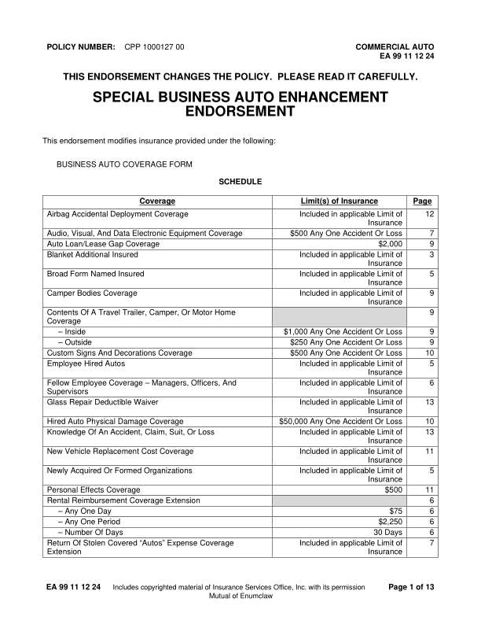
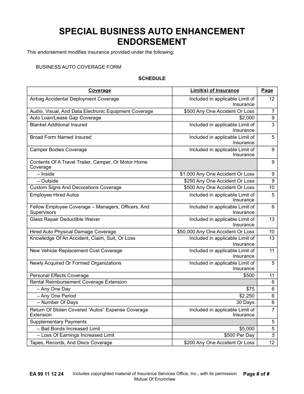
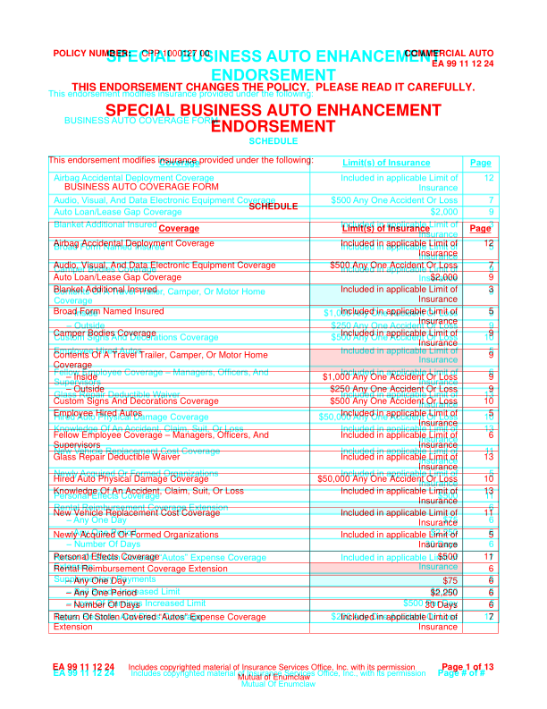
moved SPECIAL (+0.7, -60.5)pt moved BUSINESS (+0.4, -60.5)pt moved AUTO (-0.3, -60.5)pt moved ENHANCEMENT (-0.6, -60.5)pt moved ENDORSEMENT (+0.4, -57.5)pt moved This (+0.0, -74.3)pt moved endorsement (-0.0, -74.3)pt moved modifies (-0.0, -74.3)pt moved insurance (-0.0, -74.3)pt moved provided (-0.0, -74.3)pt moved under (-0.0, -74.3)pt moved the (-0.0, -74.3)pt moved following: (-0.0, -74.3)pt moved BUSINESS (+0.0, -74.3)pt moved AUTO (-0.6, -74.3)pt moved COVERAGE (-0.8, -74.3)pt moved FORM (-0.8, -74.3)pt moved SCHEDULE (+0.1, -73.8)pt moved Coverage (+0.4, -73.5)pt moved Limit(s) (+0.4, -73.5)pt moved of (+0.4, -73.5)pt moved Insurance (+0.4, -73.5)pt moved Page (+0.4, -73.5)pt moved Airbag (+0.5, -73.5)pt moved Accidental (-0.1, -73.5)pt moved Deployment (-0.1, -73.5)pt moved Coverage (-0.1, -73.5)pt moved Included (+0.3, -73.5)pt moved in (+0.3, -73.5)pt moved applicable (+0.3, -73.5)pt moved Limit (+0.3, -73.5)pt moved of (+0.3, -73.5)pt moved 12 (+0.3, -73.5)pt moved Insurance (+0.3, -73.3)pt moved Audio, (+0.5, -73.3)pt moved Visual, (+0.5, -73.3)pt moved And (-0.3, -73.3)pt moved Data (-0.3, -73.3)pt moved Electronic (-0.3, -73.3)pt moved Equipment (-0.3, -73.3)pt moved Coverage (-0.3, -73.3)pt moved $500 (+1.4, -73.3)pt moved Any (+0.9, -73.3)pt moved One (+0.9, -73.3)pt moved Accident (+0.3, -73.3)pt moved Or (+0.3, -73.3)pt moved Loss (+0.3, -73.3)pt moved 7 (+0.3, -73.3)pt moved Auto (+0.5, -73.3)pt moved Loan/Lease (+0.5, -73.3)pt moved Gap (+0.5, -73.3)pt moved Coverage (+0.5, -73.3)pt moved $2,000 (+0.3, -73.3)pt moved 9 (+0.3, -73.3)pt moved Blanket (+0.5, -72.5)pt moved Additional (-0.1, -72.5)pt moved Insured (-0.1, -72.5)pt moved Included (+0.3, -72.5)pt moved in (+0.3, -72.5)pt moved applicable (+0.3, -72.5)pt moved Limit (+0.3, -72.5)pt moved of (+0.3, -72.5)pt moved 3 (+0.3, -72.5)pt moved Insurance (+0.3, -73.0)pt moved Broad (+0.5, -72.3)pt moved Form (+0.5, -72.3)pt moved Named (+0.5, -72.3)pt moved Insured (+0.5, -72.3)pt moved Included (+0.3, -72.3)pt moved in (+0.3, -72.3)pt moved applicable (+0.3, -72.3)pt moved Limit (+0.3, -72.3)pt moved of (+0.3, -72.3)pt moved 5 (+0.3, -72.3)pt moved Insurance (+0.3, -72.8)pt moved Camper (+0.5, -72.0)pt moved Bodies (+0.5, -72.0)pt moved Coverage (+0.5, -72.0)pt moved Included (+0.3, -72.0)pt moved in (+0.3, -72.0)pt moved applicable (+0.3, -72.0)pt moved Limit (+0.3, -72.0)pt moved of (+0.3, -72.0)pt moved 9 (+0.3, -72.0)pt moved Insurance (+0.3, -72.5)pt moved Contents (+0.5, -71.8)pt moved Of (+0.5, -71.8)pt moved A (-0.1, -71.8)pt moved Travel (-0.8, -71.8)pt moved Trailer, (-1.4, -71.8)pt moved Camper, (-2.3, -71.8)pt moved Or (-2.9, -71.8)pt moved Motor (-2.9, -71.8)pt moved Home (-2.9, -71.8)pt moved 9 (+0.3, -71.8)pt moved Coverage (+0.5, -72.3)pt moved – (+0.5, -71.5)pt moved Inside (+0.5, -71.5)pt moved $1,000 (+1.4, -71.5)pt moved Any (+0.8, -71.5)pt moved One (+0.8, -71.5)pt moved Accident (+0.3, -71.5)pt moved Or (+0.3, -71.5)pt moved Loss (+0.3, -71.5)pt moved 9 (+0.3, -71.5)pt moved – (+0.5, -71.5)pt moved Outside (+0.5, -71.5)pt moved $250 (+1.4, -71.5)pt moved Any (+0.9, -71.5)pt moved One (+0.9, -71.5)pt moved Accident (+0.3, -71.5)pt moved Or (+0.3, -71.5)pt moved Loss (+0.3, -71.5)pt moved 9 (+0.3, -71.5)pt moved Custom (+0.5, -71.5)pt moved Signs (+0.5, -71.5)pt moved And (-0.1, -71.5)pt moved Decorations (-0.1, -71.5)pt moved Coverage (-0.1, -71.5)pt moved $500 (+1.4, -71.5)pt moved Any (+0.9, -71.5)pt moved One (+0.9, -71.5)pt moved Accident (+0.3, -71.5)pt moved Or (+0.3, -71.5)pt moved Loss (+0.3, -71.5)pt moved 10 (+0.3, -71.5)pt moved Employee (+0.5, -70.8)pt moved Hired (+0.5, -70.8)pt moved Autos (-0.1, -70.8)pt moved Included (+0.3, -70.8)pt moved in (+0.3, -70.8)pt moved applicable (+0.3, -70.8)pt moved Limit (+0.3, -70.8)pt moved of (+0.3, -70.8)pt moved 5 (+0.3, -70.8)pt moved Insurance (+0.3, -71.3)pt moved Fellow (+0.5, -70.5)pt moved Employee (+0.5, -70.5)pt moved Coverage (+0.5, -70.5)pt moved – (+0.5, -70.5)pt moved Managers, (+0.5, -70.5)pt moved Officers, (+0.5, -70.5)pt moved And (-0.3, -70.5)pt moved Included (+0.3, -70.5)pt moved in (+0.3, -70.5)pt moved applicable (+0.3, -70.5)pt moved Limit (+0.3, -70.5)pt moved of (+0.3, -70.5)pt moved 6 (+0.3, -70.5)pt moved Supervisors (+0.5, -71.0)pt moved Insurance (+0.3, -71.0)pt moved Glass (+0.5, -70.3)pt moved Repair (+0.5, -70.3)pt moved Deductible (+0.5, -70.3)pt moved Waiver (+0.5, -70.3)pt moved Included (+0.3, -70.3)pt moved in (+0.3, -70.3)pt moved applicable (+0.3, -70.3)pt moved Limit (+0.3, -70.3)pt moved of (+0.3, -70.3)pt moved 13 (+0.3, -70.3)pt moved Insurance (+0.3, -70.8)pt moved Hired (+0.5, -70.0)pt moved Auto (-0.1, -70.0)pt moved Physical (-0.1, -70.0)pt moved Damage (-0.1, -70.0)pt moved Coverage (-0.1, -70.0)pt moved $50,000 (+1.4, -70.0)pt moved Any (+0.9, -70.0)pt moved One (+0.9, -70.0)pt moved Accident (+0.3, -70.0)pt moved Or (+0.3, -70.0)pt moved Loss (+0.3, -70.0)pt moved 10 (+0.3, -70.0)pt moved Knowledge (+0.5, -70.0)pt moved Of (+0.5, -70.0)pt moved An (-0.1, -70.0)pt moved Accident, (-0.6, -70.0)pt moved Claim, (-0.6, -70.0)pt moved Suit, (-0.6, -70.0)pt moved Or (-0.6, -70.0)pt moved Loss (-0.7, -70.0)pt moved Included (+0.3, -70.0)pt moved in (+0.3, -70.0)pt moved applicable (+0.3, -70.0)pt moved Limit (+0.3, -70.0)pt moved of (+0.3, -70.0)pt moved 13 (+0.3, -70.0)pt moved Insurance (+0.3, -69.8)pt moved New (+0.5, -69.8)pt moved Vehicle (+0.5, -69.8)pt moved Replacement (-0.1, -69.8)pt moved Cost (-0.1, -69.8)pt moved Coverage (-0.1, -69.8)pt moved Included (+0.3, -69.8)pt moved in (+0.3, -69.8)pt moved applicable (+0.3, -69.8)pt moved Limit (+0.3, -69.8)pt moved of (+0.3, -69.8)pt moved 11 (+1.0, -69.8)pt moved Insurance (+0.3, -69.5)pt moved Newly (+0.5, -69.5)pt moved Acquired (-0.1, -69.5)pt moved Or (-0.1, -69.5)pt moved Formed (-0.1, -69.5)pt moved Organizations (-0.1, -69.5)pt moved Included (+0.3, -69.5)pt moved in (+0.3, -69.5)pt moved applicable (+0.3, -69.5)pt moved Limit (+0.3, -69.5)pt moved of (+0.3, -69.5)pt moved 5 (+0.3, -69.5)pt moved Insurance (+0.3, -69.3)pt moved Personal (+0.5, -69.3)pt moved Effects (+0.5, -69.3)pt moved Coverage (+0.3, -69.3)pt moved $500 (+0.3, -69.3)pt moved 11 (+1.0, -69.3)pt moved Rental (+0.5, -69.3)pt moved Reimbursement (+0.5, -69.3)pt moved Coverage (+0.5, -69.3)pt moved Extension (+0.5, -69.3)pt moved 6 (+0.3, -69.3)pt moved – (+0.5, -68.5)pt moved Any (-0.1, -68.5)pt moved One (-0.1, -68.5)pt moved Day (-0.1, -68.5)pt moved $75 (+0.3, -68.5)pt moved 6 (+0.3, -68.5)pt moved – (+0.5, -68.5)pt moved Any (-0.1, -68.5)pt moved One (-0.1, -68.5)pt moved Period (-0.1, -68.5)pt moved $2,250 (+0.3, -68.5)pt moved 6 (+0.3, -68.5)pt moved – (+0.5, -68.5)pt moved Number (+0.5, -68.5)pt moved Of (+0.5, -68.5)pt moved Days (+0.5, -68.5)pt moved 30 (+0.3, -68.5)pt moved Days (+0.3, -68.5)pt moved 6 (+0.3, -68.5)pt moved Return (+0.5, -67.8)pt moved Of (+0.5, -67.8)pt moved Stolen (+0.5, -67.8)pt moved Covered (+0.5, -67.8)pt moved “Autos” (+0.5, -67.8)pt moved Expense (+0.5, -67.8)pt moved Coverage (+0.5, -67.8)pt moved Included (+0.3, -67.8)pt moved in (+0.3, -67.8)pt moved applicable (+0.3, -67.8)pt moved Limit (+0.3, -67.8)pt moved of (+0.3, -67.8)pt moved 7 (+0.3, -67.8)pt moved Extension (+0.5, -68.3)pt moved Insurance (+0.3, -68.3)pt moved EA (+0.7, +5.1)pt moved 99 (+0.3, +5.1)pt moved 11 (+0.3, +5.1)pt moved 12 (-0.2, +5.1)pt moved 24 (-0.2, +5.1)pt moved Includes (+2.8, +5.3)pt moved copyrighted (+3.5, +5.3)pt moved material (+4.6, +5.3)pt moved of (+5.3, +5.3)pt moved Insurance (+5.5, +5.3)pt moved Services (+6.3, +5.3)pt moved Office, (+7.0, +5.3)pt moved with (+10.3, +5.3)pt moved its (+10.6, +5.3)pt moved permission (+10.9, +5.3)pt moved Page (-4.4, +5.1)pt moved of (-4.3, +5.1)pt moved Mutual (+4.0, +6.3)pt moved Enumclaw (+6.0, +6.3)pt missing h rule at 248.3 (54.5-557.5) missing h rule at 260.5 (177.5-223.1) missing h rule at 260.5 (382.8-481.1) missing h rule at 260.5 (525.6-549.5) missing h rule at 265.8 (54.5-557.5) missing h rule at 290.3 (54.5-557.5) missing h rule at 303.8 (54.5-557.5) missing h rule at 366.3 (54.5-557.5) missing h rule at 390.5 (346.5-557.5) missing h rule at 415.0 (346.5-557.5) missing h rule at 428.8 (54.5-557.5) missing h rule at 442.3 (54.5-557.5) missing h rule at 455.8 (54.5-557.5) missing h rule at 480.3 (54.5-557.5) missing h rule at 504.8 (54.5-557.5) missing h rule at 529.3 (54.5-557.5) missing h rule at 542.8 (54.5-557.5) missing h rule at 567.3 (54.5-557.5) missing h rule at 591.8 (54.5-557.5) missing h rule at 629.5 (346.5-557.5) missing h rule at 643.0 (346.5-557.5) missing h rule at 656.8 (54.5-557.5) missing h rule at 670.3 (54.5-557.5) missing h rule at 683.8 (54.5-557.5) missing h rule at 708.3 (54.5-557.5) missing v rule at 54.2 (248.5-708.0) missing v rule at 346.5 (248.5-708.0) missing v rule at 517.5 (248.5-708.0) missing v rule at 557.7 (248.5-708.0) extra h rule at 174.4 (54.0-558.8) extra h rule at 186.4 (177.9-223.5) extra h rule at 186.4 (383.2-481.5) extra h rule at 186.4 (526.0-549.9) extra h rule at 192.4 (54.0-558.8) extra h rule at 217.1 (54.0-558.8) extra h rule at 230.6 (54.0-558.8) extra h rule at 244.1 (54.0-558.8) extra h rule at 268.9 (54.0-558.8) extra h rule at 293.6 (54.0-558.8) extra h rule at 357.4 (54.0-558.8) extra h rule at 370.9 (54.0-558.8) extra h rule at 384.4 (54.0-558.8) extra h rule at 409.1 (54.0-558.8) extra h rule at 433.9 (54.0-558.8) extra h rule at 458.6 (54.0-558.8) extra h rule at 472.9 (54.0-558.8) extra h rule at 497.6 (54.0-558.8) extra h rule at 522.4 (54.0-558.8) extra h rule at 547.1 (54.0-558.8) extra h rule at 560.6 (54.0-558.8) extra h rule at 574.1 (54.0-558.8) extra h rule at 588.4 (54.0-558.8) extra h rule at 601.9 (54.0-558.8) extra h rule at 640.1 (54.0-558.8) extra h rule at 654.4 (54.0-558.8) extra h rule at 667.9 (54.0-558.8) extra h rule at 681.4 (54.0-558.8) extra h rule at 695.6 (54.0-558.8) extra v rule at 54.4 (174.0-695.2) extra v rule at 346.9 (174.0-695.2) extra v rule at 517.9 (174.0-695.2) extra v rule at 558.4 (174.0-695.2)
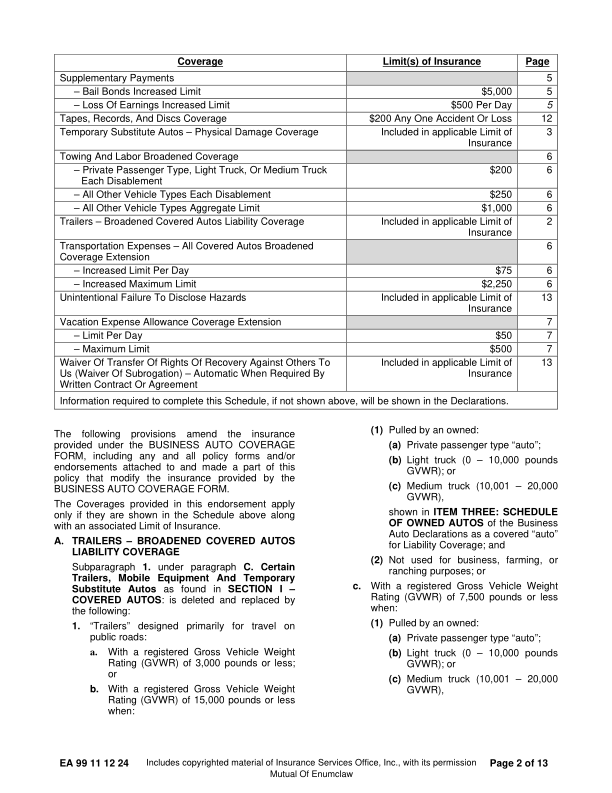
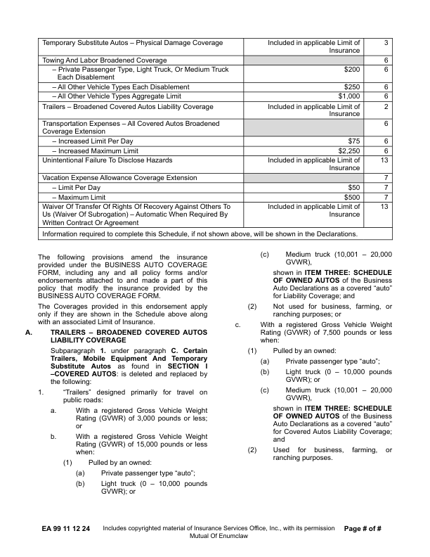
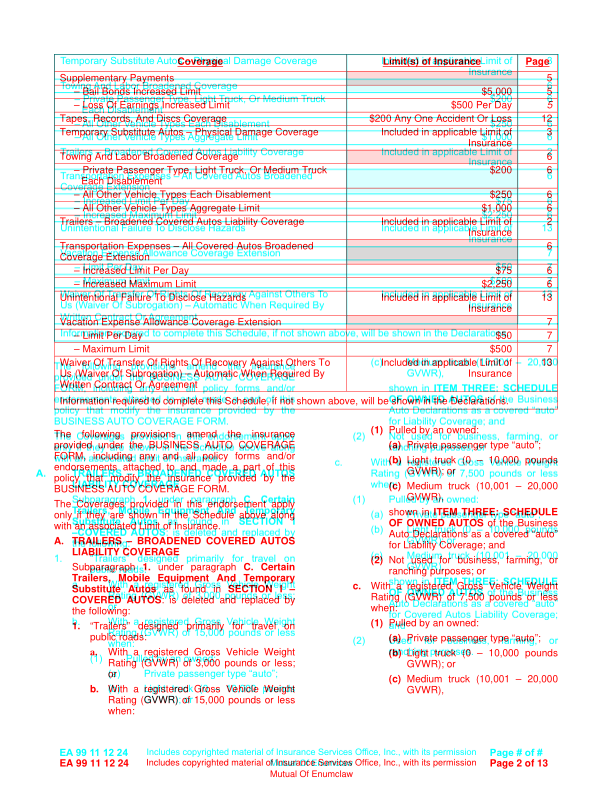
moved Temporary (+0.5, -71.4)pt moved Substitute (-0.6, -71.4)pt moved Autos (-1.2, -71.4)pt moved – (-1.2, -71.4)pt moved Physical (-1.2, -71.4)pt moved Damage (-1.2, -71.4)pt moved Coverage (-1.2, -71.4)pt moved Included (+0.3, -71.4)pt moved in (+0.3, -71.4)pt moved applicable (+0.3, -71.4)pt moved Limit (+0.3, -71.4)pt moved of (+0.3, -71.4)pt moved 3 (+0.3, -71.4)pt moved Insurance (+0.3, -71.2)pt moved Towing (+0.5, -71.2)pt moved And (-1.2, -71.2)pt moved Labor (-1.2, -71.2)pt moved Broadened (-1.2, -71.2)pt moved Coverage (-1.2, -71.2)pt moved 6 (+0.3, -71.2)pt moved – (+0.5, -71.2)pt moved Private (+0.5, -71.2)pt moved Passenger (+0.5, -71.2)pt moved Type, (+0.3, -71.2)pt moved Light (-0.3, -71.2)pt moved Truck, (-0.4, -71.2)pt moved Or (-0.8, -71.2)pt moved Medium (-0.8, -71.2)pt moved Truck (-1.0, -71.2)pt moved $200 (+0.3, -71.2)pt moved 6 (+0.3, -71.2)pt moved Each (+0.5, -70.9)pt moved Disablement (+0.5, -70.9)pt moved – (+0.5, -70.9)pt moved All (-0.1, -70.9)pt moved Other (-0.1, -70.9)pt moved Vehicle (-0.1, -70.9)pt moved Types (-0.8, -70.9)pt moved Each (-1.4, -70.9)pt moved Disablement (-1.4, -70.9)pt moved $250 (+0.3, -70.9)pt moved 6 (+0.3, -70.9)pt moved – (+0.5, -70.9)pt moved All (-0.1, -70.9)pt moved Other (-0.1, -70.9)pt moved Vehicle (-0.1, -70.9)pt moved Types (-0.8, -70.9)pt moved Aggregate (-1.9, -70.9)pt moved Limit (-1.9, -70.9)pt moved $1,000 (+0.3, -70.9)pt moved 6 (+0.3, -70.9)pt moved Trailers (+0.5, -70.2)pt moved – (+0.1, -70.2)pt moved Broadened (+0.1, -70.2)pt moved Covered (+0.1, -70.2)pt moved Autos (-0.4, -70.2)pt moved Liability (-0.5, -70.2)pt moved Coverage (-0.5, -70.2)pt moved Included (+0.3, -70.2)pt moved in (+0.3, -70.2)pt moved applicable (+0.3, -70.2)pt moved Limit (+0.3, -70.2)pt moved of (+0.3, -70.2)pt moved 2 (+0.3, -70.2)pt moved Insurance (+0.3, -70.7)pt moved Transportation (+0.5, -69.9)pt moved Expenses (+0.1, -69.9)pt moved – (+0.1, -69.9)pt moved All (-0.5, -69.9)pt moved Covered (-0.5, -69.9)pt moved Autos (-1.0, -69.9)pt moved Broadened (-1.0, -69.9)pt moved 6 (+0.3, -69.9)pt moved Coverage (+0.5, -70.4)pt moved Extension (+0.5, -70.4)pt moved – (+0.5, -69.7)pt moved Increased (+0.5, -69.7)pt moved Limit (+0.5, -69.7)pt moved Per (+0.5, -69.7)pt moved Day (+0.5, -69.7)pt moved $75 (+0.3, -69.7)pt moved 6 (+0.3, -69.7)pt moved – (+0.5, -69.7)pt moved Increased (+0.5, -69.7)pt moved Maximum (+0.5, -69.7)pt moved Limit (+0.5, -69.7)pt moved $2,250 (+0.3, -69.7)pt moved 6 (+0.3, -69.7)pt moved Unintentional (+0.5, -69.7)pt moved Failure (+0.5, -69.7)pt moved To (+0.3, -69.7)pt moved Disclose (-0.8, -69.7)pt moved Hazards (-0.8, -69.7)pt moved Included (+0.3, -69.7)pt moved in (+0.3, -69.7)pt moved applicable (+0.3, -69.7)pt moved Limit (+0.3, -69.7)pt moved of (+0.3, -69.7)pt moved 13 (+0.3, -69.7)pt moved Insurance (+0.3, -69.4)pt moved Vacation (+0.5, -69.4)pt moved Expense (-0.3, -69.4)pt moved Allowance (-0.8, -69.4)pt moved Coverage (-0.8, -69.4)pt moved Extension (-0.8, -69.4)pt moved 7 (+0.3, -69.4)pt moved – (+0.5, -68.7)pt moved Limit (+0.5, -68.7)pt moved Per (+0.5, -68.7)pt moved Day (+0.5, -68.7)pt moved $50 (+0.3, -68.7)pt moved 7 (+0.3, -68.7)pt moved – (+0.5, -68.7)pt moved Maximum (+0.5, -68.7)pt moved Limit (+0.5, -68.7)pt moved $500 (+0.3, -68.7)pt moved 7 (+0.3, -68.7)pt moved Waiver (+0.5, -68.7)pt moved Of (+0.1, -68.7)pt moved Transfer (-0.1, -68.7)pt moved Of (-0.5, -68.7)pt moved Rights (-0.5, -68.7)pt moved Of (-0.5, -68.7)pt moved Recovery (-0.5, -68.7)pt moved Against (-1.0, -68.7)pt moved Others (-1.0, -68.7)pt moved To (-1.2, -68.7)pt moved Included (+0.3, -68.7)pt moved in (+0.3, -68.7)pt moved applicable (+0.3, -68.7)pt moved Limit (+0.3, -68.7)pt moved of (+0.3, -68.7)pt moved 13 (+0.3, -68.7)pt moved Us (+0.5, -68.4)pt moved (Waiver (+0.5, -68.4)pt moved Of (+0.1, -68.4)pt moved Subrogation) (+0.1, -68.4)pt moved – (+0.1, -68.4)pt moved Automatic (-0.5, -68.4)pt moved When (-0.5, -68.4)pt moved Required (-0.5, -68.4)pt moved By (-0.5, -68.4)pt moved Insurance (+0.3, -68.4)pt moved Written (+0.5, -68.2)pt moved Contract (+0.3, -68.2)pt moved Or (+0.3, -68.2)pt moved Agreement (-0.3, -68.2)pt moved Information (+0.5, -68.2)pt moved required (+0.5, -68.2)pt moved to (+0.5, -68.2)pt moved complete (+0.5, -68.2)pt moved this (+0.5, -68.2)pt moved Schedule, (+0.5, -68.2)pt moved if (+0.5, -68.2)pt moved not (+0.5, -68.2)pt moved shown (+0.4, -68.2)pt moved above, (+0.4, -68.2)pt moved will (+0.4, -68.2)pt moved be (+0.4, -68.2)pt moved shown (+0.4, -68.2)pt moved in (+0.4, -68.2)pt moved the (+0.4, -68.2)pt moved Declarations. (+0.4, -68.2)pt moved The (+0.0, -68.2)pt moved following (+0.0, -68.2)pt moved provisions (+0.0, -68.2)pt moved amend (+0.1, -68.2)pt moved the (+0.1, -68.2)pt moved insurance (+0.0, -68.2)pt moved provided (+0.0, -68.7)pt moved under (+0.1, -68.7)pt moved the (+0.4, -68.7)pt moved BUSINESS (+0.5, -68.7)pt moved AUTO (+0.1, -68.7)pt moved COVERAGE (+0.0, -68.7)pt moved FORM, (+0.0, -68.4)pt moved including (+0.0, -68.4)pt moved any (+0.0, -68.4)pt moved and (+0.1, -68.4)pt moved all (+0.1, -68.4)pt moved policy (+0.0, -68.4)pt moved forms (+0.0, -68.4)pt moved and/or (+0.0, -68.4)pt moved endorsements (+0.0, -68.2)pt moved attached (+0.0, -68.2)pt moved to (+0.0, -68.2)pt moved and (+0.1, -68.2)pt moved made (+0.0, -68.2)pt moved a (+0.1, -68.2)pt moved part (+0.1, -68.2)pt moved of (+0.1, -68.2)pt moved this (+0.0, -68.2)pt moved policy (+0.0, -68.7)pt moved that (+0.0, -68.7)pt moved modify (+0.1, -68.7)pt moved the (+0.1, -68.7)pt moved insurance (+0.0, -68.7)pt moved provided (+0.1, -68.7)pt moved by (+0.1, -68.7)pt moved the (+0.1, -68.7)pt moved BUSINESS (+0.0, -68.4)pt moved AUTO (-0.5, -68.4)pt moved COVERAGE (-0.7, -68.4)pt moved FORM. (-0.7, -68.4)pt moved The (+0.0, -68.4)pt moved Coverages (+0.0, -68.4)pt moved provided (+0.0, -68.4)pt moved in (+0.1, -68.4)pt moved this (+0.0, -68.4)pt moved endorsement (+0.1, -68.4)pt moved apply (+0.1, -68.4)pt moved only (+0.0, -68.2)pt moved if (+0.0, -68.2)pt moved they (+0.0, -68.2)pt moved are (+0.0, -68.2)pt moved shown (+0.1, -68.2)pt moved in (+0.0, -68.2)pt moved the (+0.1, -68.2)pt moved Schedule (+0.1, -68.2)pt moved above (+0.1, -68.2)pt moved along (+0.0, -68.2)pt moved with (+0.0, -68.7)pt moved an (-0.0, -68.7)pt moved associated (-0.0, -68.7)pt moved Limit (-0.0, -68.7)pt moved of (-0.0, -68.7)pt moved Insurance. (-0.0, -68.7)pt moved c. (-18.0, -124.2)pt moved With (+0.0, -124.2)pt moved a (+0.2, -124.2)pt moved registered (+0.4, -124.2)pt moved Gross (+0.5, -124.2)pt moved Vehicle (+0.7, -124.2)pt moved Weight (+0.3, -124.2)pt moved Substitute (+0.0, -67.9)pt moved Autos (+1.8, -67.9)pt moved as (+4.0, -67.9)pt moved found (+6.2, -67.9)pt moved in (+8.4, -67.9)pt moved SECTION (+10.6, -67.9)pt moved I (+12.7, -67.9)pt moved – (+187.4, -60.4)pt moved pounds (+36.0, -68.4)pt moved AUTOS: (+4.4, -68.4)pt moved is (+3.4, -68.4)pt moved deleted (+2.5, -68.4)pt moved and (+1.7, -68.4)pt moved replaced (+0.8, -68.4)pt moved by (+0.0, -68.4)pt moved the (+0.0, -68.2)pt moved following: (-0.0, -68.2)pt moved 1. (-18.0, -68.2)pt moved “Trailers” (+0.0, -68.2)pt moved designed (-0.3, -68.2)pt moved primarily (-0.2, -68.2)pt moved for (-0.1, -68.2)pt moved travel (-0.1, -68.2)pt moved on (+0.1, -68.2)pt moved public (+0.0, -67.9)pt moved roads: (-0.0, -67.9)pt moved a. (-18.0, -67.9)pt moved With (+0.0, -67.9)pt moved a (+0.2, -67.9)pt moved registered (+0.4, -67.9)pt moved Gross (+0.5, -67.9)pt moved Vehicle (+0.6, -67.9)pt moved Weight (+0.3, -67.9)pt moved (b) (-280.8, +34.6)pt moved Light (-262.8, +34.6)pt moved truck (-262.7, +34.6)pt moved (0 (-262.8, +34.6)pt moved – (-262.8, +34.6)pt moved 10,000 (-262.8, +34.6)pt moved pounds (-262.7, +34.6)pt moved GVWR); (-262.8, +34.8)pt moved or (-262.8, +34.8)pt moved EA (-0.0, -12.0)pt moved 99 (-0.4, -12.0)pt moved 11 (-0.4, -12.0)pt moved 12 (-0.9, -12.0)pt moved 24 (-0.9, -12.0)pt moved Includes (+0.1, -11.1)pt moved copyrighted (+0.1, -11.1)pt moved material (+0.1, -11.1)pt moved of (+0.1, -11.1)pt moved Insurance (+0.1, -11.1)pt moved Services (+0.1, -11.1)pt moved Office, (+0.1, -11.1)pt moved Inc., (-0.0, -11.1)pt moved with (-0.0, -11.1)pt moved its (-0.0, -11.1)pt moved permission (-0.0, -11.1)pt moved Page (+0.0, -12.0)pt moved of (+0.1, -12.0)pt moved Mutual (-0.0, -10.6)pt moved Of (-0.0, -10.6)pt moved Enumclaw (-0.0, -10.6)pt size c. 10.0 -> 10.0pt size – 10.0 -> 10.0pt size 1. 10.0 -> 10.0pt size a. 10.0 -> 10.0pt size (b) 10.0 -> 10.0pt missing h rule at 66.4 (177.5-223.1) missing h rule at 66.4 (382.8-481.1) missing h rule at 66.4 (525.6-549.5) missing h rule at 71.4 (346.5-557.5) missing h rule at 84.9 (346.5-557.5) missing h rule at 98.7 (54.5-557.5) missing h rule at 112.2 (54.5-557.5) missing h rule at 125.7 (54.5-557.5) missing h rule at 149.9 (346.5-557.5) missing h rule at 163.4 (346.5-557.5) missing h rule at 188.2 (54.5-557.5) missing h rule at 201.7 (54.5-557.5) missing h rule at 215.2 (54.5-557.5) missing h rule at 239.4 (346.5-557.5) missing h rule at 263.9 (346.5-557.5) missing h rule at 277.7 (54.5-557.5) missing h rule at 291.2 (54.5-557.5) missing h rule at 315.4 (346.5-557.5) missing h rule at 328.9 (346.5-557.5) missing h rule at 356.2 (54.5-557.5) missing h rule at 391.7 (54.5-557.5) missing h rule at 409.2 (54.5-557.5) missing v rule at 54.2 (54.5-409.0) missing v rule at 346.5 (54.5-391.4) missing v rule at 517.5 (54.5-391.4) missing v rule at 557.7 (54.5-409.0) extra h rule at 79.1 (54.0-558.8) extra h rule at 92.6 (54.0-558.8) extra h rule at 117.4 (54.0-558.8) extra h rule at 130.9 (54.0-558.8) extra h rule at 144.4 (54.0-558.8) extra h rule at 169.1 (54.0-558.8) extra h rule at 193.9 (54.0-558.8) extra h rule at 208.1 (54.0-558.8) extra h rule at 221.6 (54.0-558.8) extra h rule at 246.4 (54.0-558.8) extra h rule at 259.9 (54.0-558.8) extra h rule at 274.1 (54.0-558.8) extra h rule at 287.6 (54.0-558.8) extra h rule at 323.6 (54.0-558.8)
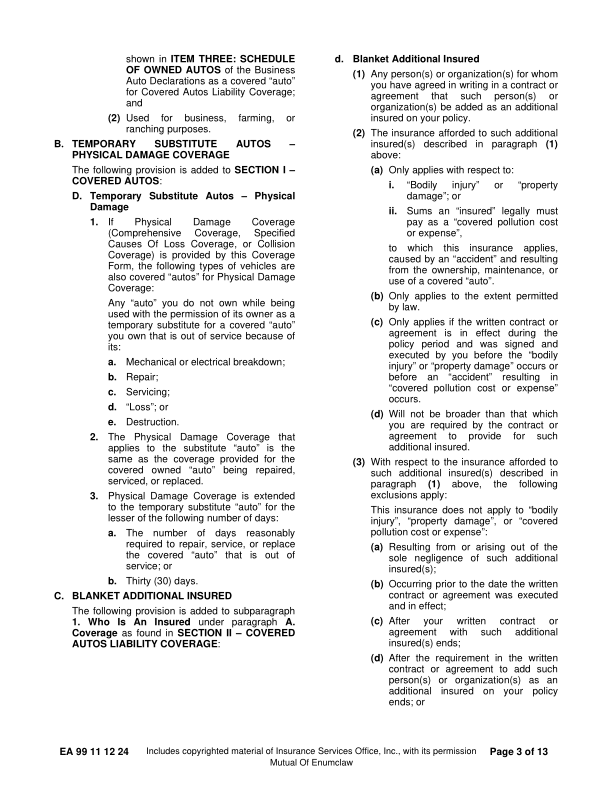
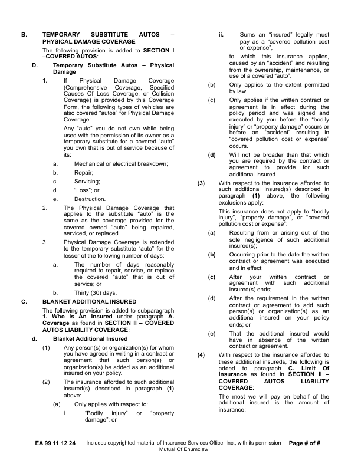
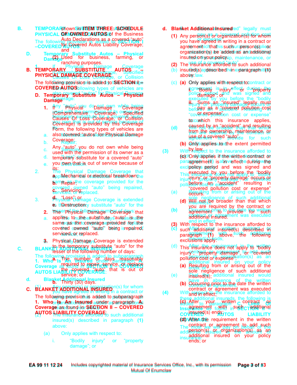
moved in (+301.0, +122.3)pt moved d. (-280.8, +515.3)pt moved Blanket (-262.8, +515.3)pt moved Additional (-263.2, +515.3)pt moved Insured (-263.2, +515.3)pt moved of (+261.5, +506.5)pt moved the (+267.8, +506.5)pt moved (1) (-280.8, +515.3)pt moved Any (-262.8, +515.3)pt moved person(s) (-262.8, +515.3)pt moved or (-262.8, +515.3)pt moved organization(s) (-262.7, +515.3)pt moved for (-262.7, +515.3)pt moved whom (-262.8, +515.3)pt moved you (-262.8, +514.8)pt moved have (-262.7, +514.8)pt moved agreed (-262.8, +514.8)pt moved in (-262.7, +514.8)pt moved writing (-262.8, +514.8)pt moved in (-262.7, +514.8)pt moved a (-262.8, +514.8)pt moved contract (-262.7, +514.8)pt moved or (-262.8, +514.8)pt moved agreement (-262.8, +515.0)pt moved that (-262.8, +515.0)pt moved such (-262.8, +515.0)pt moved person(s) (-262.7, +515.0)pt moved or (-262.8, +515.0)pt moved organization(s) (-262.8, +515.3)pt moved be (-262.7, +515.3)pt moved added (-262.8, +515.3)pt moved as (-262.8, +515.3)pt moved an (-262.8, +515.3)pt moved additional (-262.7, +515.3)pt moved insured (-262.8, +514.8)pt moved on (-262.8, +514.8)pt moved your (-262.8, +514.8)pt moved policy. (-262.8, +514.8)pt moved (2) (-280.8, +514.8)pt moved The (-262.8, +514.8)pt moved insurance (-262.7, +514.8)pt moved afforded (-262.7, +514.8)pt moved to (-262.8, +514.8)pt moved such (-262.8, +514.8)pt moved additional (-262.7, +514.8)pt moved insured(s) (-262.8, +515.1)pt moved described (-262.8, +515.1)pt moved in (-262.8, +515.1)pt moved paragraph (-262.8, +515.1)pt moved (1) (-262.7, +515.1)pt moved above: (-262.8, +515.3)pt moved The (+298.8, +502.6)pt moved is (+286.2, +513.1)pt moved (a) (-280.8, +515.3)pt moved Only (-262.8, +515.3)pt moved applies (-262.8, +515.3)pt moved with (-262.8, +515.3)pt moved respect (-262.8, +515.3)pt moved to: (-262.8, +515.3)pt moved i. (-280.8, +515.3)pt moved “Bodily (-262.8, +515.3)pt moved injury” (-262.7, +515.3)pt moved or (-262.7, +515.3)pt moved “property (-262.7, +515.3)pt moved damage”; (-262.8, +515.6)pt moved or (-262.8, +515.6)pt size (1) 10.0 -> 10.0pt size (2) 10.0 -> 10.0pt size (a) 10.0 -> 10.0pt size i. 10.0 -> 10.0pt
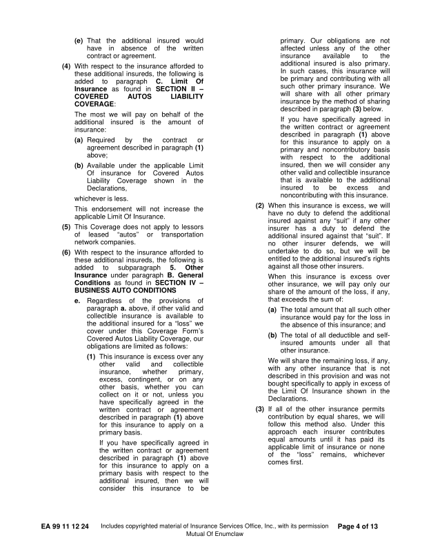
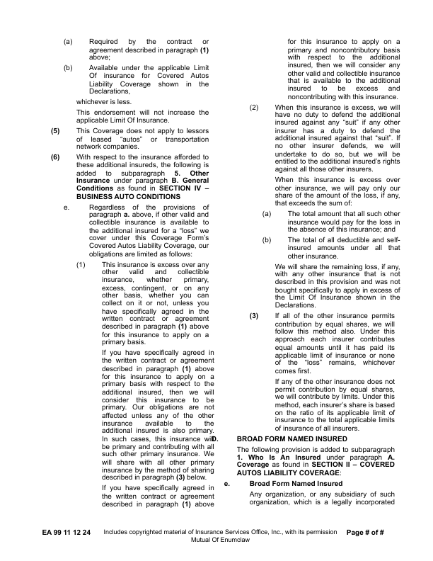
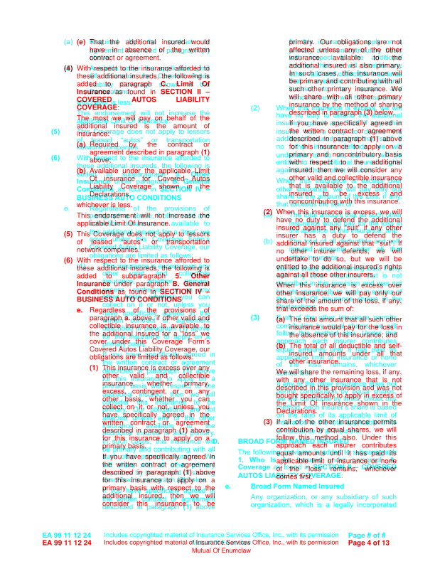
moved (a) (-18.0, -143.9)pt moved Required (+0.0, -143.9)pt moved by (-0.0, -143.9)pt moved the (+0.1, -143.9)pt moved contract (+0.0, -143.9)pt moved or (-0.0, -143.9)pt moved for (+0.0, -146.9)pt moved this (+0.1, -146.9)pt moved insurance (+0.1, -146.9)pt moved to (+0.1, -146.9)pt moved apply (+0.0, -146.9)pt moved on (+0.1, -146.9)pt moved a (+0.0, -146.9)pt moved agreement (+0.0, -143.7)pt moved described (+0.0, -143.7)pt moved in (+0.1, -143.7)pt moved paragraph (+0.1, -143.7)pt moved (1) (+0.1, -143.7)pt moved primary (+0.0, -146.7)pt moved and (+0.0, -146.7)pt moved noncontributory (+0.1, -146.7)pt moved basis (+0.1, -146.7)pt moved above; (+0.0, -144.2)pt moved with (+0.0, -147.2)pt moved respect (+0.1, -147.2)pt moved to (+0.0, -147.2)pt moved the (+0.0, -147.2)pt moved additional (+0.1, -147.2)pt moved (b) (-18.0, -144.2)pt moved Available (+0.0, -144.2)pt moved under (-0.1, -144.2)pt moved the (-0.0, -144.2)pt moved applicable (-0.0, -144.2)pt moved Limit (+0.1, -144.2)pt moved other (+0.0, -146.7)pt moved valid (+0.0, -146.7)pt moved and (+0.1, -146.7)pt moved collectible (+0.1, -146.7)pt moved insurance (+0.0, -146.7)pt moved Of (+0.0, -143.9)pt moved insurance (+0.2, -143.9)pt moved for (+0.3, -143.9)pt moved Covered (+0.5, -143.9)pt moved Autos (+0.0, -143.9)pt moved that (+0.0, -147.2)pt moved is (+0.0, -147.2)pt moved available (+0.0, -147.2)pt moved to (+0.0, -147.2)pt moved the (+0.0, -147.2)pt moved additional (+0.1, -147.2)pt moved insured (+0.0, -146.9)pt moved to (+0.1, -146.9)pt moved be (+0.1, -146.9)pt moved excess (+0.0, -146.9)pt moved and (+0.0, -146.9)pt moved noncontributing (+0.0, -146.7)pt moved with (-0.0, -146.7)pt moved this (-0.0, -146.7)pt moved insurance. (-0.0, -146.7)pt moved whichever (+0.0, -144.2)pt moved is (-0.0, -144.2)pt moved less. (-0.0, -144.2)pt moved (2) (-18.0, -146.7)pt moved When (+0.0, -146.7)pt moved this (+0.0, -146.7)pt moved insurance (+0.0, -146.7)pt moved is (+0.1, -146.7)pt moved excess, (+0.1, -146.7)pt moved we (+0.1, -146.7)pt moved will (+0.0, -146.7)pt moved This (+0.0, -144.2)pt moved endorsement (+0.1, -144.2)pt moved will (+0.0, -144.2)pt moved not (+0.0, -144.2)pt moved increase (+0.0, -144.2)pt moved the (+0.1, -144.2)pt moved have (+0.0, -147.2)pt moved no (+0.1, -147.2)pt moved duty (+0.1, -147.2)pt moved to (+0.1, -147.2)pt moved defend (+0.0, -147.2)pt moved the (+0.1, -147.2)pt moved additional (+0.1, -147.2)pt moved applicable (+0.0, -143.9)pt moved Limit (+0.0, -143.9)pt moved Of (-0.0, -143.9)pt moved Insurance. (-0.0, -143.9)pt moved insured (+0.0, -146.9)pt moved against (+0.1, -146.9)pt moved any (+0.0, -146.9)pt moved “suit” (+0.1, -146.9)pt moved if (+0.1, -146.9)pt moved any (+0.1, -146.9)pt moved other (+0.0, -146.9)pt moved (5) (-18.0, -143.9)pt moved This (+0.0, -143.9)pt moved Coverage (+0.0, -143.9)pt moved does (+0.0, -143.9)pt moved not (+0.1, -143.9)pt moved apply (+0.1, -143.9)pt moved to (+0.0, -143.9)pt moved lessors (+0.0, -143.9)pt moved of (+0.0, -143.7)pt moved leased (+0.1, -143.7)pt moved “autos” (+0.0, -143.7)pt moved or (+0.0, -143.7)pt moved transportation (+0.1, -143.7)pt moved additional (+0.0, -147.2)pt moved insured (+0.0, -147.2)pt moved against (+0.0, -147.2)pt moved that (+0.0, -147.2)pt moved “suit”. (+0.0, -147.2)pt moved If (+0.0, -147.2)pt moved network (+0.0, -144.2)pt moved companies. (-0.0, -144.2)pt moved no (+0.0, -146.9)pt moved other (+0.1, -146.9)pt moved insurer (+0.1, -146.9)pt moved defends, (+0.1, -146.9)pt moved we (+0.1, -146.9)pt moved will (+0.0, -146.9)pt moved undertake (+0.0, -146.7)pt moved to (+0.1, -146.7)pt moved do (+0.0, -146.7)pt moved so, (+0.1, -146.7)pt moved but (+0.0, -146.7)pt moved we (+0.1, -146.7)pt moved will (+0.1, -146.7)pt moved be (+0.1, -146.7)pt moved (6) (-18.0, -144.2)pt moved With (+0.0, -144.2)pt moved respect (+0.1, -144.2)pt moved to (+0.1, -144.2)pt moved the (+0.1, -144.2)pt moved insurance (+0.2, -144.2)pt moved afforded (+0.1, -144.2)pt moved to (+0.0, -144.2)pt moved entitled (+0.0, -147.2)pt moved to (+0.1, -147.2)pt moved the (+0.1, -147.2)pt moved additional (+0.2, -147.2)pt moved insured’s (+0.2, -147.2)pt moved rights (+0.1, -147.2)pt moved these (+0.0, -143.9)pt moved additional (+0.0, -143.9)pt moved insureds, (-0.0, -143.9)pt moved the (+0.0, -143.9)pt moved following (+0.0, -143.9)pt moved is (+0.1, -143.9)pt moved added (+0.0, -143.7)pt moved to (+0.1, -143.7)pt moved subparagraph (+0.0, -143.7)pt moved 5. (+0.0, -143.7)pt moved Other (+0.0, -143.7)pt moved Insurance (+0.0, -144.2)pt moved under (+0.0, -144.2)pt moved paragraph (+0.1, -144.2)pt moved B. (+0.1, -144.2)pt moved General (+0.1, -144.2)pt moved When (+0.0, -146.9)pt moved this (+0.1, -146.9)pt moved insurance (+0.0, -146.9)pt moved is (+0.1, -146.9)pt moved excess (+0.1, -146.9)pt moved over (+0.0, -146.9)pt moved Conditions (+0.0, -143.9)pt moved as (+0.1, -143.9)pt moved found (+0.1, -143.9)pt moved in (+0.1, -143.9)pt moved SECTION (+0.0, -143.9)pt moved IV (+0.0, -143.9)pt moved – (+0.0, -143.9)pt moved other (+0.0, -146.7)pt moved insurance, (+0.1, -146.7)pt moved we (+0.1, -146.7)pt moved will (+0.0, -146.7)pt moved pay (+0.1, -146.7)pt moved only (+0.0, -146.7)pt moved our (+0.0, -146.7)pt moved share (+0.0, -147.2)pt moved of (+0.2, -147.2)pt moved the (+0.2, -147.2)pt moved amount (+0.4, -147.2)pt moved of (+0.4, -147.2)pt moved the (+0.5, -147.2)pt moved loss, (+0.6, -147.2)pt moved if (+0.7, -147.2)pt moved any, (+0.8, -147.2)pt moved e. (-18.0, -143.7)pt moved Regardless (+0.0, -143.7)pt moved of (+0.0, -143.7)pt moved the (+0.0, -143.7)pt moved provisions (+0.1, -143.7)pt moved of (+0.1, -143.7)pt moved paragraph (+0.0, -144.2)pt moved a. (+0.0, -144.2)pt moved above, (+0.1, -144.2)pt moved if (+0.0, -144.2)pt moved other (+0.0, -144.2)pt moved valid (+0.1, -144.2)pt moved and (+0.0, -144.2)pt moved (a) (-18.0, -146.9)pt moved The (+0.0, -146.9)pt moved total (+0.0, -146.9)pt moved amount (+0.0, -146.9)pt moved that (+0.1, -146.9)pt moved all (+0.1, -146.9)pt moved such (+0.1, -146.9)pt moved other (+0.0, -146.9)pt moved collectible (+0.0, -143.9)pt moved insurance (+0.0, -143.9)pt moved is (+0.0, -143.9)pt moved available (+0.1, -143.9)pt moved to (+0.1, -143.9)pt moved insurance (+0.0, -146.7)pt moved would (+0.0, -146.7)pt moved pay (-0.0, -146.7)pt moved for (+0.1, -146.7)pt moved the (+0.0, -146.7)pt moved loss (+0.1, -146.7)pt moved in (+0.0, -146.7)pt moved the (+280.8, -145.2)pt moved additional (+0.0, -143.7)pt moved insured (+0.0, -143.7)pt moved for (+0.0, -143.7)pt moved a (-0.0, -143.7)pt moved “loss” (+0.1, -143.7)pt moved we (+0.0, -143.7)pt moved cover (+0.0, -144.2)pt moved under (+0.1, -144.2)pt moved this (+0.2, -144.2)pt moved Coverage (+0.2, -144.2)pt moved Form’s (+0.2, -144.2)pt moved (b) (-18.0, -147.2)pt moved The (+0.0, -147.2)pt moved total (+0.1, -147.2)pt moved of (+0.0, -147.2)pt moved all (+0.0, -147.2)pt moved deductible (+0.1, -147.2)pt moved and (+0.1, -147.2)pt moved self- (+0.0, -147.2)pt moved Covered (+0.0, -143.9)pt moved Autos (-0.3, -143.9)pt moved Liability (-0.3, -143.9)pt moved Coverage, (-0.1, -143.9)pt moved our (+0.0, -143.9)pt moved insured (+0.0, -146.9)pt moved amounts (+0.0, -146.9)pt moved under (+0.1, -146.9)pt moved all (+0.1, -146.9)pt moved that (+0.0, -146.9)pt moved obligations (+0.0, -143.7)pt moved are (-0.0, -143.7)pt moved limited (-0.0, -143.7)pt moved as (-0.0, -143.7)pt moved follows: (-0.0, -143.7)pt moved other (+0.0, -146.7)pt moved insurance. (-0.0, -146.7)pt moved (1) (-18.0, -143.7)pt moved This (+0.0, -143.7)pt moved insurance (+0.1, -143.7)pt moved is (+0.1, -143.7)pt moved excess (+0.1, -143.7)pt moved over (+0.0, -143.7)pt moved any (+0.1, -143.7)pt moved We (+0.0, -146.7)pt moved will (-0.0, -146.7)pt moved share (+0.1, -146.7)pt moved the (+0.3, -146.7)pt moved remaining (+0.4, -146.7)pt moved loss, (+0.5, -146.7)pt moved if (+0.7, -146.7)pt moved any, (+0.8, -146.7)pt moved other (+0.0, -144.2)pt moved valid (+0.0, -144.2)pt moved and (+0.1, -144.2)pt moved collectible (+0.1, -144.2)pt moved with (+0.0, -147.2)pt moved any (+0.1, -147.2)pt moved other (+0.1, -147.2)pt moved insurance (+0.0, -147.2)pt moved that (+0.0, -147.2)pt moved is (-0.0, -147.2)pt moved not (+0.1, -147.2)pt moved insurance, (+0.0, -143.9)pt moved whether (+0.4, -143.9)pt moved primary, (+0.8, -143.9)pt moved described (+0.0, -146.9)pt moved in (+0.1, -146.9)pt moved this (+0.0, -146.9)pt moved provision (+0.0, -146.9)pt moved and (+0.0, -146.9)pt moved was (+0.0, -146.9)pt moved not (+0.1, -146.9)pt moved excess, (+0.0, -143.7)pt moved contingent, (+0.1, -143.7)pt moved or (+0.0, -143.7)pt moved on (+0.1, -143.7)pt moved any (+0.1, -143.7)pt moved bought (+0.0, -146.7)pt moved specifically (+0.0, -146.7)pt moved to (+0.0, -146.7)pt moved apply (+0.0, -146.7)pt moved in (+0.1, -146.7)pt moved excess (+0.1, -146.7)pt moved of (+0.1, -146.7)pt moved other (+0.0, -144.2)pt moved basis, (+0.0, -144.2)pt moved whether (+0.0, -144.2)pt moved you (+0.0, -144.2)pt moved can (+0.1, -144.2)pt moved the (+0.0, -147.2)pt moved Limit (+0.0, -147.2)pt moved Of (+0.0, -147.2)pt moved Insurance (+0.1, -147.2)pt moved shown (+0.0, -147.2)pt moved in (+0.0, -147.2)pt moved the (+0.1, -147.2)pt moved collect (+0.0, -143.9)pt moved on (+0.1, -143.9)pt moved it (+0.0, -143.9)pt moved or (+0.0, -143.9)pt moved not, (+0.0, -143.9)pt moved unless (+0.0, -143.9)pt moved you (+0.1, -143.9)pt moved Declarations. (+0.0, -146.9)pt moved have (+0.0, -143.7)pt moved specifically (+0.1, -143.7)pt moved agreed (-0.0, -143.7)pt moved in (+0.0, -143.7)pt moved the (+0.1, -143.7)pt moved (3) (-18.0, -146.9)pt moved If (+0.0, -146.9)pt moved all (+0.1, -146.9)pt moved of (+0.1, -146.9)pt moved the (+0.0, -146.9)pt moved other (+0.1, -146.9)pt moved insurance (+0.1, -146.9)pt moved permits (+0.0, -146.9)pt moved contribution (+0.0, -146.7)pt moved by (-0.0, -146.7)pt moved equal (+0.1, -146.7)pt moved shares, (+0.0, -146.7)pt moved we (+0.0, -146.7)pt moved will (+0.0, -146.7)pt moved described (+0.0, -143.9)pt moved in (+0.0, -143.9)pt moved paragraph (+0.0, -143.9)pt moved (1) (+0.1, -143.9)pt moved above (+0.1, -143.9)pt moved for (+0.0, -143.7)pt moved this (+0.1, -143.7)pt moved insurance (+0.1, -143.7)pt moved to (+0.0, -143.7)pt moved apply (+0.0, -143.7)pt moved on (+0.0, -143.7)pt moved a (+0.0, -143.7)pt moved approach (+0.0, -146.9)pt moved each (+0.1, -146.9)pt moved insurer (+0.0, -146.9)pt moved contributes (+0.1, -146.9)pt moved equal (+0.0, -146.7)pt moved amounts (+0.0, -146.7)pt moved until (+0.1, -146.7)pt moved it (+0.1, -146.7)pt moved has (+0.0, -146.7)pt moved paid (+0.1, -146.7)pt moved its (-0.0, -146.7)pt moved If (+0.0, -144.2)pt moved you (+0.1, -144.2)pt moved have (+0.0, -144.2)pt moved specifically (+0.0, -144.2)pt moved agreed (+0.1, -144.2)pt moved in (+0.0, -144.2)pt moved applicable (+0.0, -146.4)pt moved limit (+0.0, -146.4)pt moved of (+0.0, -146.4)pt moved insurance (+0.1, -146.4)pt moved or (+0.0, -146.4)pt moved none (+0.1, -146.4)pt moved the (+0.0, -143.9)pt moved written (+0.1, -143.9)pt moved contract (+0.1, -143.9)pt moved or (+0.0, -143.9)pt moved agreement (+0.1, -143.9)pt moved of (+0.0, -146.9)pt moved the (+0.0, -146.9)pt moved “loss” (+0.0, -146.9)pt moved remains, (+0.1, -146.9)pt moved whichever (+0.1, -146.9)pt moved described (+0.0, -143.7)pt moved in (+0.1, -143.7)pt moved paragraph (+0.1, -143.7)pt moved (1) (+0.0, -143.7)pt moved above (+0.1, -143.7)pt moved comes (+0.0, -146.7)pt moved first. (-0.0, -146.7)pt moved for (+0.0, -143.4)pt moved this (+0.1, -143.4)pt moved insurance (+0.1, -143.4)pt moved to (+0.1, -143.4)pt moved apply (+0.0, -143.4)pt moved on (+0.1, -143.4)pt moved a (+0.0, -143.4)pt moved primary (+0.0, -143.9)pt moved basis (+0.1, -143.9)pt moved with (+0.1, -143.9)pt moved respect (+0.1, -143.9)pt moved to (+0.0, -143.9)pt moved the (+0.1, -143.9)pt moved additional (+0.0, -143.7)pt moved insured, (+0.1, -143.7)pt moved then (+0.1, -143.7)pt moved we (+0.1, -143.7)pt moved will (+0.0, -143.7)pt moved consider (+0.0, -143.4)pt moved this (+0.0, -143.4)pt moved insurance (+0.0, -143.4)pt moved to (-0.0, -143.4)pt moved be (+0.1, -143.4)pt moved EA (-0.0, -12.0)pt moved 99 (-0.4, -12.0)pt moved 11 (-0.4, -12.0)pt moved 12 (-0.9, -12.0)pt moved 24 (-0.9, -12.0)pt moved Includes (+0.1, -11.1)pt moved copyrighted (+0.1, -11.1)pt moved material (+0.1, -11.1)pt moved of (+0.1, -11.1)pt moved Insurance (+0.1, -11.1)pt moved Services (+0.1, -11.1)pt moved Office, (+0.1, -11.1)pt moved Inc., (-0.0, -11.1)pt moved with (-0.0, -11.1)pt moved its (-0.0, -11.1)pt moved permission (-0.0, -11.1)pt moved Page (+0.0, -12.0)pt moved of (+0.1, -12.0)pt moved Mutual (-0.0, -10.6)pt moved Of (-0.0, -10.6)pt moved Enumclaw (-0.0, -10.6)pt size (a) 10.0 -> 10.0pt size (b) 10.0 -> 10.0pt size (2) 10.0 -> 10.0pt size e. 10.0 -> 10.0pt size (a) 10.0 -> 10.0pt size (b) 10.0 -> 10.0pt size (1) 10.0 -> 10.0pt
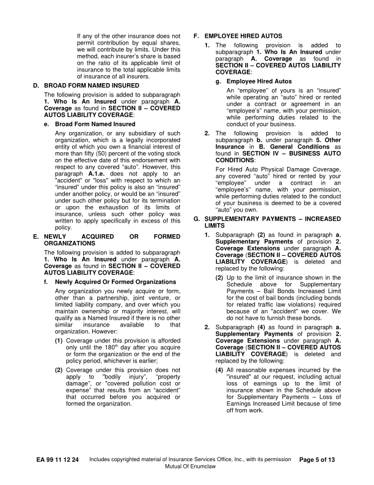
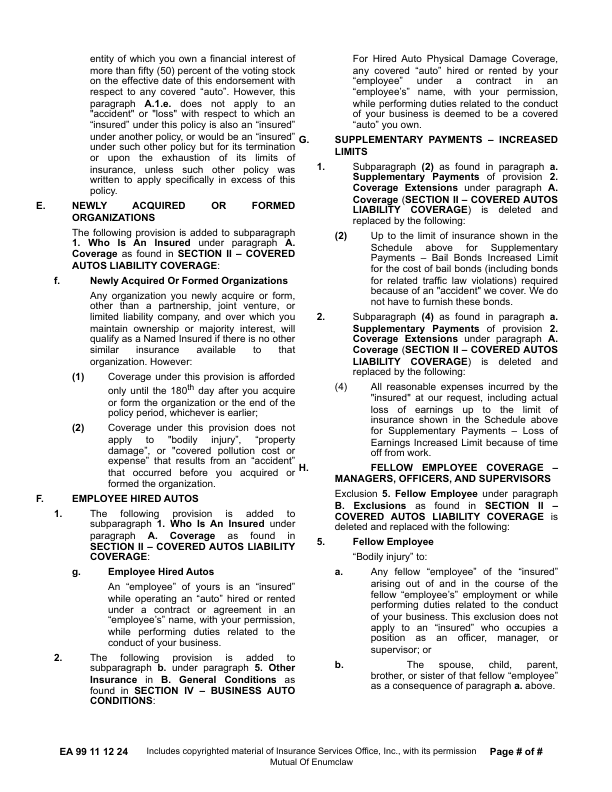
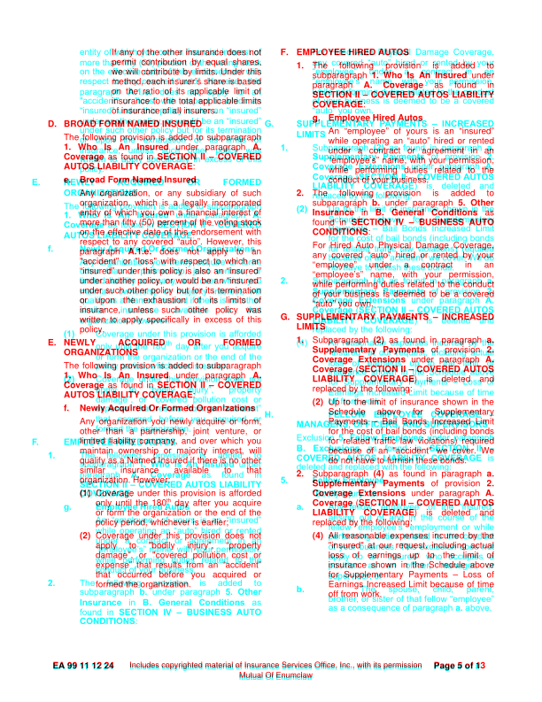
moved entity (+0.0, -180.9)pt moved of (+0.1, -180.9)pt moved which (+0.0, -180.9)pt moved you (+0.1, -180.9)pt moved own (+0.0, -180.9)pt moved a (+0.0, -180.9)pt moved financial (+0.1, -180.9)pt moved interest (+0.1, -180.9)pt moved of (+0.1, -180.9)pt moved more (+0.0, -180.7)pt moved than (+0.1, -180.7)pt moved fifty (+0.0, -180.7)pt moved (50) (-0.0, -180.7)pt moved percent (+0.1, -180.7)pt moved of (+0.0, -180.7)pt moved the (+0.1, -180.7)pt moved voting (+0.1, -180.7)pt moved stock (+0.1, -180.7)pt moved on (+0.0, -181.2)pt moved the (+0.1, -181.2)pt moved effective (+0.1, -181.2)pt moved date (-0.1, -181.2)pt moved of (-0.1, -181.2)pt moved this (+0.0, -181.2)pt moved endorsement (-0.0, -181.2)pt moved with (+0.0, -181.2)pt moved respect (+0.0, -180.9)pt moved to (+0.2, -180.9)pt moved any (+0.3, -180.9)pt moved covered (+0.4, -180.9)pt moved “auto”. (+0.4, -180.9)pt moved However, (+0.5, -180.9)pt moved this (+0.0, -180.9)pt moved paragraph (+0.0, -180.7)pt moved A.1.e. (+0.1, -180.7)pt moved does (+0.1, -180.7)pt moved not (+0.0, -180.7)pt moved apply (+0.0, -180.7)pt moved to (+0.0, -180.7)pt moved an (+0.1, -180.7)pt moved "accident" (+0.0, -181.2)pt moved or (+0.0, -181.2)pt moved "loss" (+0.0, -181.2)pt moved with (+0.0, -181.2)pt moved respect (+0.1, -181.2)pt moved to (+0.1, -181.2)pt moved which (+0.0, -181.2)pt moved an (+0.1, -181.2)pt moved of (+0.0, -218.2)pt moved your (+0.1, -218.2)pt moved business (+0.1, -218.2)pt moved is (+0.0, -218.2)pt moved deemed (+0.1, -218.2)pt moved to (+0.1, -218.2)pt moved be (+0.0, -218.2)pt moved a (+0.0, -218.2)pt moved covered (+0.0, -218.2)pt moved or (+0.0, -180.9)pt moved upon (+0.1, -180.9)pt moved the (+0.0, -180.9)pt moved exhaustion (+0.1, -180.9)pt moved of (+0.0, -180.9)pt moved its (+0.1, -180.9)pt moved limits (+0.1, -180.9)pt moved of (+0.1, -180.9)pt moved insurance, (+0.0, -180.7)pt moved unless (+0.0, -180.7)pt moved such (-0.0, -180.7)pt moved other (-0.0, -180.7)pt moved policy (+0.1, -180.7)pt moved was (+0.0, -180.7)pt moved written (+0.0, -181.2)pt moved to (+0.1, -181.2)pt moved apply (+0.0, -181.2)pt moved specifically (+0.1, -181.2)pt moved in (+0.0, -181.2)pt moved excess (+0.0, -181.2)pt moved of (+0.1, -181.2)pt moved this (+0.0, -181.2)pt moved policy. (+0.0, -180.9)pt moved E. (-18.0, -180.9)pt moved NEWLY (+0.0, -180.9)pt moved ACQUIRED (-0.9, -180.9)pt moved OR (-0.5, -180.9)pt moved FORMED (+0.1, -180.9)pt moved ORGANIZATIONS (+0.0, -180.7)pt moved The (+0.0, -180.7)pt moved following (+0.0, -180.7)pt moved provision (+0.1, -180.7)pt moved is (+0.0, -180.7)pt moved added (+0.0, -180.7)pt moved to (+0.1, -180.7)pt moved subparagraph (+0.1, -180.7)pt moved (2) (-18.0, -217.9)pt moved Up (+0.0, -217.9)pt moved to (+0.1, -217.9)pt moved the (+0.1, -217.9)pt moved limit (+0.1, -217.9)pt moved of (+0.1, -217.9)pt moved insurance (+0.0, -217.9)pt moved shown (+0.1, -217.9)pt moved in (-0.0, -217.9)pt moved the (+0.1, -217.9)pt moved Schedule (+0.0, -217.7)pt moved above (+0.0, -217.7)pt moved for (+0.1, -217.7)pt moved Supplementary (+0.1, -217.7)pt moved Payments (+0.0, -218.2)pt moved – (+0.1, -218.2)pt moved Bail (+0.1, -218.2)pt moved Bonds (+0.1, -218.2)pt moved Increased (+0.0, -218.2)pt moved Limit (+0.1, -218.2)pt moved for (+0.0, -217.9)pt moved the (+0.0, -217.9)pt moved cost (+0.1, -217.9)pt moved of (+0.1, -217.9)pt moved bail (+0.1, -217.9)pt moved bonds (+0.1, -217.9)pt moved (including (+0.1, -217.9)pt moved bonds (+0.1, -217.9)pt moved limited (+0.0, -180.9)pt moved liability (+0.2, -180.9)pt moved company, (+0.3, -180.9)pt moved and (-0.4, -180.9)pt moved over (-0.2, -180.9)pt moved which (-0.1, -180.9)pt moved you (+0.1, -180.9)pt moved maintain (+0.0, -180.7)pt moved ownership (+0.1, -180.7)pt moved or (+0.1, -180.7)pt moved majority (+0.0, -180.7)pt moved interest, (+0.0, -180.7)pt moved will (+0.0, -180.7)pt moved of (+73.1, -180.7)pt moved qualify (+0.0, -181.2)pt moved as (+0.1, -181.2)pt moved a (+0.1, -181.2)pt moved Named (+0.1, -181.2)pt moved Insured (+0.1, -181.2)pt moved if (+0.1, -181.2)pt moved there (+0.0, -181.2)pt moved is (+0.1, -181.2)pt moved no (+0.0, -181.2)pt moved other (-0.0, -181.2)pt moved similar (+0.0, -180.9)pt moved insurance (+0.0, -180.9)pt moved available (+0.1, -180.9)pt moved to (+0.1, -180.9)pt moved that (+0.0, -180.9)pt moved organization. (+0.0, -180.7)pt moved However: (-0.0, -180.7)pt moved (1) (-18.0, -180.7)pt moved Coverage (+0.0, -180.7)pt moved under (+0.0, -180.7)pt moved this (+0.1, -180.7)pt moved provision (+0.2, -180.7)pt moved is (+0.2, -180.7)pt moved afforded (+0.2, -180.7)pt moved th (-0.8, -177.4)pt moved only (+0.0, -177.1)pt moved until (-0.3, -177.1)pt moved the (-0.5, -177.1)pt moved 180 (-0.7, -177.1)pt moved day (+0.9, -177.1)pt moved after (+0.6, -177.1)pt moved you (+0.3, -177.1)pt moved acquire (-0.0, -177.1)pt moved or (+0.0, -176.4)pt moved form (+0.0, -176.4)pt moved the (+0.0, -176.4)pt moved organization (+0.1, -176.4)pt moved or (+0.1, -176.4)pt moved the (+0.1, -176.4)pt moved end (+0.0, -176.4)pt moved of (+0.0, -176.4)pt moved the (+0.1, -176.4)pt moved loss (+0.0, -217.7)pt moved of (+0.0, -217.7)pt moved earnings (+0.1, -217.7)pt moved up (+0.1, -217.7)pt moved to (+0.0, -217.7)pt moved the (+0.0, -217.7)pt moved limit (+0.0, -217.7)pt moved of (+0.1, -217.7)pt moved expense” (+0.0, -176.9)pt moved that (+0.0, -176.9)pt moved results (+0.1, -176.9)pt moved from (+0.0, -176.9)pt moved an (+0.1, -176.9)pt moved “accident” (+0.1, -176.9)pt moved that (+0.0, -176.7)pt moved occurred (+0.1, -176.7)pt moved before (+0.0, -176.7)pt moved you (+0.1, -176.7)pt moved acquired (+0.1, -176.7)pt moved or (+0.0, -176.7)pt moved formed (+0.0, -176.4)pt moved the (-0.0, -176.4)pt moved organization. (-0.0, -176.4)pt moved of (-44.0, -87.9)pt size th 6.0 -> 8.3pt
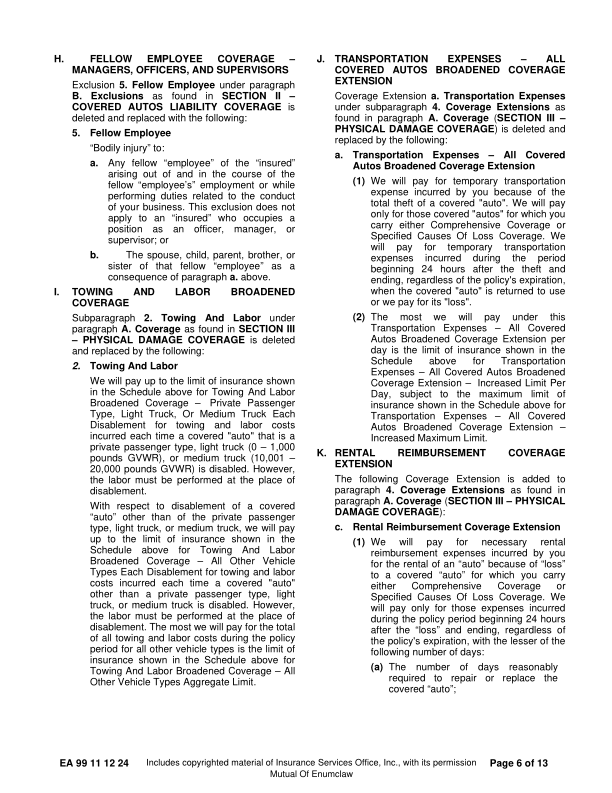
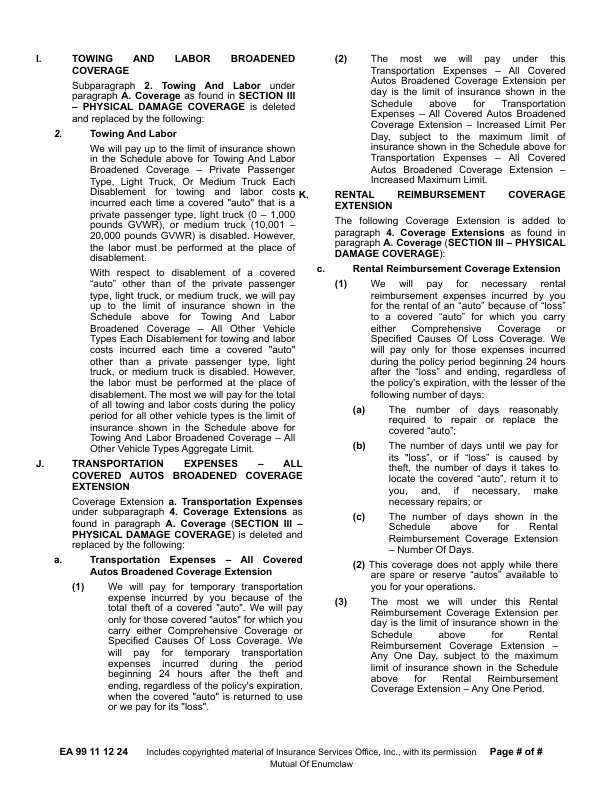
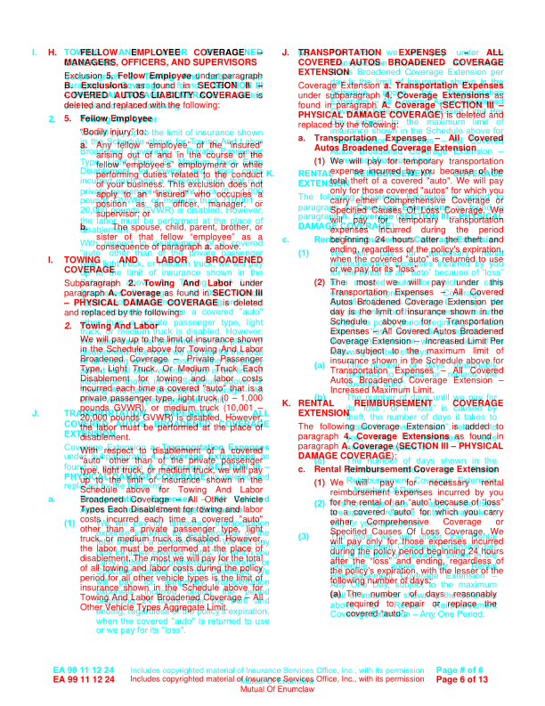
moved TOWING (+0.0, -232.9)pt moved AND (-0.3, -232.9)pt moved LABOR (-0.1, -232.9)pt moved BROADENED (+0.1, -232.9)pt moved (2) (-18.0, -257.9)pt moved The (+0.0, -257.9)pt moved most (+0.0, -257.9)pt moved we (+0.1, -257.9)pt moved will (+0.0, -257.9)pt moved pay (+0.1, -257.9)pt moved under (+0.1, -257.9)pt moved this (+0.0, -257.9)pt moved Transportation (+0.0, -257.7)pt moved Expenses (-0.1, -257.7)pt moved – (+0.1, -257.7)pt moved All (-0.2, -257.7)pt moved Covered (+0.0, -257.7)pt moved Autos (+0.0, -258.2)pt moved Broadened (+0.1, -258.2)pt moved Coverage (+0.0, -258.2)pt moved Extension (+0.0, -258.2)pt moved per (+0.0, -258.2)pt moved day (+0.0, -257.9)pt moved is (+0.1, -257.9)pt moved the (+0.1, -257.9)pt moved limit (+0.1, -257.9)pt moved of (+0.0, -257.9)pt moved insurance (+0.0, -257.9)pt moved shown (+0.1, -257.9)pt moved in (+0.0, -257.9)pt moved the (+0.1, -257.9)pt moved Schedule (+0.0, -257.7)pt moved above (+0.2, -257.7)pt moved for (+0.4, -257.7)pt moved Transportation (+0.4, -257.7)pt moved Expenses (+0.0, -258.2)pt moved – (+0.3, -258.2)pt moved All (-0.1, -258.2)pt moved Covered (+0.2, -258.2)pt moved Autos (-0.2, -258.2)pt moved Broadened (+0.1, -258.2)pt moved We (+0.0, -232.7)pt moved will (-0.1, -232.7)pt moved pay (-0.1, -232.7)pt moved up (-0.0, -232.7)pt moved to (-0.0, -232.7)pt moved the (+0.0, -232.7)pt moved limit (-0.0, -232.7)pt moved of (+0.0, -232.7)pt moved insurance (+0.1, -232.7)pt moved shown (+0.1, -232.7)pt moved in (+0.0, -233.2)pt moved the (+0.3, -233.2)pt moved Schedule (+0.6, -233.2)pt moved above (+0.9, -233.2)pt moved for (+1.1, -233.2)pt moved Towing (+1.2, -233.2)pt moved And (-0.2, -233.2)pt moved Labor (+0.0, -233.2)pt moved Broadened (+0.0, -232.9)pt moved Coverage (+0.7, -232.9)pt moved – (+1.4, -232.9)pt moved Private (-0.6, -232.9)pt moved Passenger (+0.1, -232.9)pt moved Type, (+0.0, -232.7)pt moved Light (-0.2, -232.7)pt moved Truck, (-0.1, -232.7)pt moved Or (-0.3, -232.7)pt moved Medium (+0.1, -232.7)pt moved Truck (+0.2, -232.7)pt moved Each (+0.0, -232.7)pt moved Disablement (+0.0, -233.2)pt moved for (+0.0, -233.2)pt moved towing (+0.1, -233.2)pt moved and (+0.0, -233.2)pt moved labor (+0.1, -233.2)pt moved costs (+0.1, -233.2)pt moved incurred (+0.0, -232.9)pt moved each (+0.0, -232.9)pt moved time (+0.0, -232.9)pt moved a (+0.0, -232.9)pt moved covered (+0.0, -232.9)pt moved "auto" (+0.0, -232.9)pt moved that (-0.0, -232.9)pt moved is (-0.0, -232.9)pt moved a (+0.0, -232.9)pt moved private (+0.0, -232.7)pt moved passenger (+0.0, -232.7)pt moved type, (+0.0, -232.7)pt moved light (+0.1, -232.7)pt moved truck (+0.0, -232.7)pt moved (0 (+0.0, -232.7)pt moved – (+0.0, -232.7)pt moved 1,000 (+0.1, -232.7)pt moved pounds (+0.0, -233.2)pt moved GVWR), (+0.0, -233.2)pt moved or (+0.1, -233.2)pt moved medium (-0.0, -233.2)pt moved truck (+0.1, -233.2)pt moved (10,001 (+0.1, -233.2)pt moved – (+0.0, -233.2)pt moved 20,000 (+0.0, -232.9)pt moved pounds (+0.2, -232.9)pt moved GVWR) (+0.3, -232.9)pt moved is (+0.4, -232.9)pt moved disabled. (+0.5, -232.9)pt moved However, (+0.6, -232.9)pt moved the (+0.0, -232.7)pt moved labor (+0.0, -232.7)pt moved must (+0.1, -232.7)pt moved be (+0.1, -232.7)pt moved performed (+0.0, -232.7)pt moved at (+0.0, -232.7)pt moved the (-0.0, -232.7)pt moved place (+0.0, -232.7)pt moved of (+0.1, -232.7)pt moved Coverage (+59.0, -209.9)pt moved Extension (+56.6, -209.9)pt moved With (+0.0, -233.2)pt moved respect (+0.1, -233.2)pt moved to (+0.0, -233.2)pt moved disablement (+0.1, -233.2)pt moved of (+0.1, -233.2)pt moved a (+0.1, -233.2)pt moved covered (+0.0, -233.2)pt moved “auto” (+0.0, -232.9)pt moved other (+0.0, -232.9)pt moved than (+0.0, -232.9)pt moved of (+0.0, -232.9)pt moved the (+0.1, -232.9)pt moved private (+0.1, -232.9)pt moved passenger (+0.0, -232.9)pt moved type, (+0.0, -232.7)pt moved light (+0.0, -232.7)pt moved truck, (+0.1, -232.7)pt moved or (+0.1, -232.7)pt moved medium (+0.1, -232.7)pt moved truck, (+0.1, -232.7)pt moved we (+0.0, -232.7)pt moved will (+0.1, -232.7)pt moved pay (+0.1, -232.7)pt moved up (+0.0, -233.2)pt moved to (+0.1, -233.2)pt moved the (+0.0, -233.2)pt moved limit (+0.1, -233.2)pt moved of (+0.0, -233.2)pt moved insurance (+0.0, -233.2)pt moved shown (+0.1, -233.2)pt moved in (+0.0, -233.2)pt moved the (+0.1, -233.2)pt moved for (+0.0, -258.2)pt moved the (+0.1, -258.2)pt moved rental (+0.1, -258.2)pt moved of (+0.1, -258.2)pt moved an (+0.1, -258.2)pt moved “auto” (+0.0, -258.2)pt moved because (+0.0, -258.2)pt moved of (+0.0, -258.2)pt moved “loss” (+0.1, -258.2)pt moved for (-26.3, -254.9)pt moved to (+0.0, -257.9)pt moved a (+0.1, -257.9)pt moved covered (+0.0, -257.9)pt moved “auto” (+0.0, -257.9)pt moved for (+0.1, -257.9)pt moved which (+0.1, -257.9)pt moved you (+0.0, -257.9)pt moved carry (+0.1, -257.9)pt moved costs (+0.0, -232.9)pt moved incurred (+0.1, -232.9)pt moved each (+0.0, -232.9)pt moved time (+0.1, -232.9)pt moved a (+0.0, -232.9)pt moved covered (+0.0, -232.9)pt moved "auto" (+0.0, -232.9)pt moved other (+0.0, -232.7)pt moved than (+0.1, -232.7)pt moved a (+0.0, -232.7)pt moved private (+0.0, -232.7)pt moved passenger (+0.0, -232.7)pt moved type, (-0.0, -232.7)pt moved light (+0.1, -232.7)pt moved truck, (+0.0, -233.2)pt moved or (+0.1, -233.2)pt moved medium (+0.2, -233.2)pt moved truck (+0.4, -233.2)pt moved is (+0.4, -233.2)pt moved disabled. (+0.5, -233.2)pt moved However, (+0.6, -233.2)pt moved the (+0.0, -232.9)pt moved labor (+0.0, -232.9)pt moved must (+0.1, -232.9)pt moved be (+0.1, -232.9)pt moved performed (+0.0, -232.9)pt moved at (+0.0, -232.9)pt moved the (-0.0, -232.9)pt moved place (+0.0, -232.9)pt moved of (+0.1, -232.9)pt moved the (-31.1, -235.9)pt moved disablement. (+0.0, -232.7)pt moved The (-0.1, -232.7)pt moved most (-0.1, -232.7)pt moved we (-0.0, -232.7)pt moved will (-0.0, -232.7)pt moved pay (-0.0, -232.7)pt moved for (-0.0, -232.7)pt moved the (-0.0, -232.7)pt moved total (+0.1, -232.7)pt moved of (-107.9, -235.7)pt moved of (+0.0, -233.2)pt moved all (+0.1, -233.2)pt moved towing (+0.1, -233.2)pt moved and (+0.0, -233.2)pt moved labor (+0.0, -233.2)pt moved costs (+0.0, -233.2)pt moved during (+0.0, -233.2)pt moved the (+0.1, -233.2)pt moved policy (+0.0, -233.2)pt moved of (-80.3, -231.7)pt moved period (+0.0, -232.9)pt moved for (+0.0, -232.9)pt moved all (+0.1, -232.9)pt moved other (+0.1, -232.9)pt moved vehicle (+0.1, -232.9)pt moved types (+0.0, -232.9)pt moved is (+0.0, -232.9)pt moved the (+0.1, -232.9)pt moved limit (+0.1, -232.9)pt moved of (+0.1, -232.9)pt moved insurance (+0.0, -232.7)pt moved shown (+0.1, -232.7)pt moved in (+0.1, -232.7)pt moved the (+0.1, -232.7)pt moved Schedule (+0.1, -232.7)pt moved above (+0.1, -232.7)pt moved for (+0.0, -232.7)pt moved Towing (+0.0, -233.2)pt moved And (-1.2, -233.2)pt moved Labor (-0.9, -233.2)pt moved Broadened (-0.5, -233.2)pt moved Coverage (-0.1, -233.2)pt moved – (+0.3, -233.2)pt moved All (+0.1, -233.2)pt moved Other (+0.0, -232.9)pt moved Vehicle (-0.0, -232.9)pt moved Types (-0.7, -232.9)pt moved Aggregate (-1.9, -232.9)pt moved Limit. (-1.9, -232.9)pt moved covered (+48.8, -209.9)pt moved EA (-0.0, -12.0)pt moved 99 (-0.4, -12.0)pt moved 11 (-0.4, -12.0)pt moved 12 (-0.9, -12.0)pt moved 24 (-0.9, -12.0)pt moved Includes (+0.1, -11.1)pt moved copyrighted (+0.1, -11.1)pt moved material (+0.1, -11.1)pt moved of (+0.1, -11.1)pt moved Insurance (+0.1, -11.1)pt moved Services (+0.1, -11.1)pt moved Office, (+0.1, -11.1)pt moved Inc., (-0.0, -11.1)pt moved with (-0.0, -11.1)pt moved its (-0.0, -11.1)pt moved permission (-0.0, -11.1)pt moved Page (+0.0, -12.0)pt moved of (+0.1, -12.0)pt moved Mutual (-0.0, -10.6)pt moved Of (-0.0, -10.6)pt moved Enumclaw (-0.0, -10.6)pt size Coverage 10.0 -> 10.0pt size Extension 10.0 -> 10.0pt
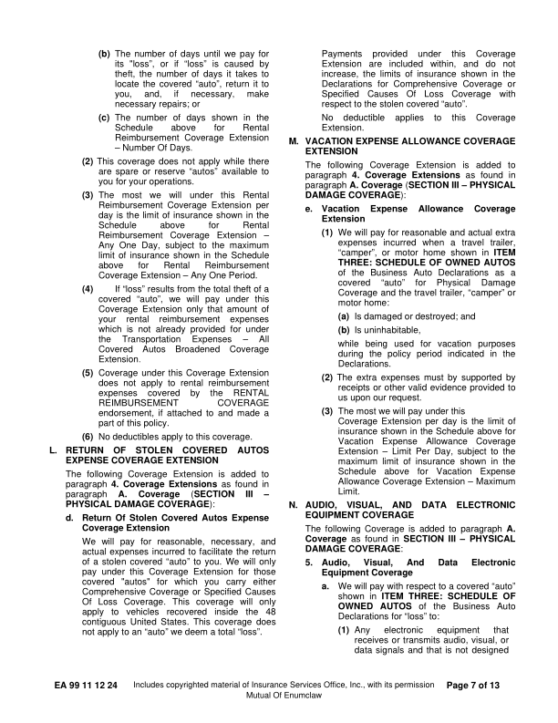
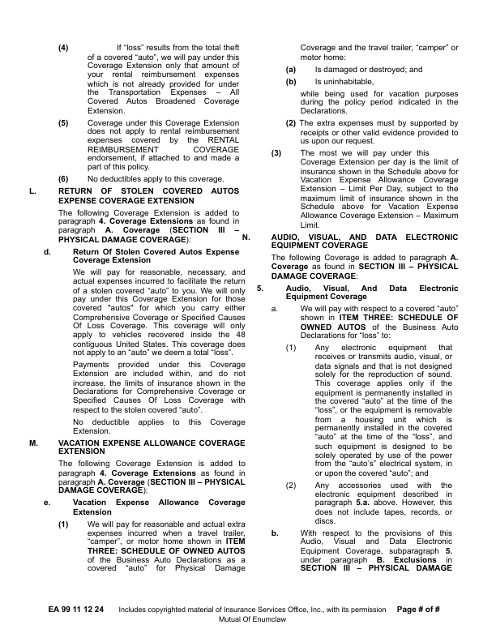
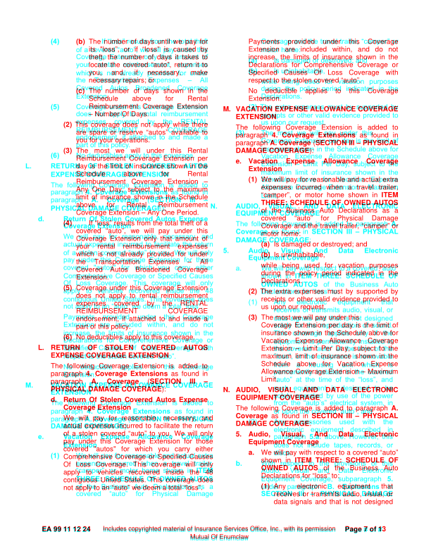
moved (4) (-18.0, -257.9)pt moved If (+18.0, -257.9)pt moved “loss” (+18.3, -257.9)pt moved results (+18.7, -257.9)pt moved from (+19.0, -257.9)pt moved the (+19.2, -257.9)pt moved total (+19.6, -257.9)pt moved theft (+19.8, -257.9)pt moved Coverage (+0.0, -261.9)pt moved and (+0.1, -261.9)pt moved the (+0.3, -261.9)pt moved travel (+0.3, -261.9)pt moved trailer, (+0.4, -261.9)pt moved “camper” (-0.1, -261.9)pt moved or (+0.0, -261.9)pt moved covered (+20.1, -257.7)pt moved “auto”, (+16.8, -257.7)pt moved we (+13.4, -257.7)pt moved will (+10.1, -257.7)pt moved pay (+6.7, -257.7)pt moved under (+3.4, -257.7)pt moved this (+0.0, -257.7)pt moved motor (+0.0, -261.7)pt moved home: (-0.0, -261.7)pt moved Coverage (+0.0, -258.2)pt moved Extension (-0.0, -258.2)pt moved only (+0.0, -258.2)pt moved that (+0.0, -258.2)pt moved amount (+0.1, -258.2)pt moved of (+0.1, -258.2)pt moved (a) (-18.0, -261.7)pt moved Is (+0.0, -261.7)pt moved damaged (-0.0, -261.7)pt moved or (-0.0, -261.7)pt moved destroyed; (-0.0, -261.7)pt moved and (-0.0, -261.7)pt moved your (+0.0, -257.9)pt moved rental (+0.0, -257.9)pt moved reimbursement (+0.0, -257.9)pt moved expenses (+0.1, -257.9)pt moved which (+0.0, -257.7)pt moved is (+0.0, -257.7)pt moved not (+0.1, -257.7)pt moved already (+0.0, -257.7)pt moved provided (+0.1, -257.7)pt moved for (-0.0, -257.7)pt moved under (+0.0, -257.7)pt moved the (+0.0, -258.2)pt moved Transportation (+0.2, -258.2)pt moved Expenses (+0.1, -258.2)pt moved – (+0.3, -258.2)pt moved All (+0.1, -258.2)pt moved while (+0.0, -261.7)pt moved being (+0.0, -261.7)pt moved used (+0.0, -261.7)pt moved for (+0.1, -261.7)pt moved vacation (+0.1, -261.7)pt moved purposes (+0.1, -261.7)pt moved Covered (+0.0, -257.9)pt moved Autos (-0.4, -257.9)pt moved Broadened (-0.1, -257.9)pt moved Coverage (+0.0, -257.9)pt moved during (+0.0, -262.2)pt moved the (+0.0, -262.2)pt moved policy (+0.0, -262.2)pt moved period (+0.0, -262.2)pt moved indicated (+0.0, -262.2)pt moved in (+0.1, -262.2)pt moved the (+0.1, -262.2)pt moved Declarations. (+0.0, -261.9)pt moved (5) (-18.0, -257.7)pt moved Coverage (+0.0, -257.7)pt moved under (+0.0, -257.7)pt moved this (+0.0, -257.7)pt moved Coverage (+0.1, -257.7)pt moved Extension (+0.1, -257.7)pt moved (2) (+0.0, -261.9)pt moved The (-0.1, -261.9)pt moved extra (-0.0, -261.9)pt moved expenses (-0.1, -261.9)pt moved must (-0.0, -261.9)pt moved by (+0.0, -261.9)pt moved supported (+0.0, -261.9)pt moved by (+0.0, -261.9)pt moved does (+0.0, -258.2)pt moved not (+0.0, -258.2)pt moved apply (+0.1, -258.2)pt moved to (+0.1, -258.2)pt moved rental (+0.1, -258.2)pt moved reimbursement (+0.0, -258.2)pt moved receipts (+0.0, -261.7)pt moved or (+0.1, -261.7)pt moved other (+0.0, -261.7)pt moved valid (+0.1, -261.7)pt moved evidence (+0.1, -261.7)pt moved provided (+0.1, -261.7)pt moved to (+0.1, -261.7)pt moved expenses (+0.0, -257.9)pt moved covered (+0.2, -257.9)pt moved by (+0.4, -257.9)pt moved the (+0.6, -257.9)pt moved RENTAL (+0.8, -257.9)pt moved us (+0.0, -262.2)pt moved upon (+0.0, -262.2)pt moved our (-0.0, -262.2)pt moved request. (-0.0, -262.2)pt moved REIMBURSEMENT (+0.0, -257.7)pt moved COVERAGE (+0.0, -257.7)pt moved (3) (-18.0, -262.2)pt moved The (+0.0, -262.2)pt moved most (+3.2, -262.2)pt moved we (+6.4, -262.2)pt moved will (+9.6, -262.2)pt moved pay (+12.8, -262.2)pt moved under (+16.0, -262.2)pt moved this (+19.2, -262.2)pt moved endorsement, (+0.0, -258.2)pt moved if (+0.1, -258.2)pt moved attached (+0.1, -258.2)pt moved to (+0.0, -258.2)pt moved and (+0.0, -258.2)pt moved made (+0.0, -258.2)pt moved a (+0.0, -258.2)pt moved Coverage (+0.0, -261.9)pt moved Extension (+0.1, -261.9)pt moved per (+0.0, -261.9)pt moved day (+0.0, -261.9)pt moved is (+0.1, -261.9)pt moved the (+0.0, -261.9)pt moved limit (+0.0, -261.9)pt moved of (+0.1, -261.9)pt moved part (+0.0, -257.9)pt moved of (-0.0, -257.9)pt moved this (-0.0, -257.9)pt moved policy. (-0.0, -257.9)pt moved insurance (+0.0, -261.7)pt moved shown (+0.0, -261.7)pt moved in (+0.1, -261.7)pt moved the (+0.0, -261.7)pt moved Schedule (+0.1, -261.7)pt moved above (+0.0, -261.7)pt moved for (+0.0, -261.7)pt moved (6) (-18.0, -257.9)pt moved No (+0.0, -257.9)pt moved deductibles (-0.0, -257.9)pt moved apply (-0.0, -257.9)pt moved to (-0.0, -257.9)pt moved this (-0.0, -257.9)pt moved coverage. (-0.0, -257.9)pt moved Vacation (+0.0, -262.2)pt moved Expense (-0.3, -262.2)pt moved Allowance (-0.4, -262.2)pt moved Coverage (+0.0, -262.2)pt moved Extension (+0.0, -261.9)pt moved – (+0.2, -261.9)pt moved Limit (+0.2, -261.9)pt moved Per (+0.4, -261.9)pt moved Day, (+0.4, -261.9)pt moved subject (-0.2, -261.9)pt moved to (-0.0, -261.9)pt moved the (+0.1, -261.9)pt moved maximum (+0.0, -261.7)pt moved limit (+0.1, -261.7)pt moved of (+0.0, -261.7)pt moved insurance (+0.1, -261.7)pt moved shown (+0.1, -261.7)pt moved in (+0.1, -261.7)pt moved the (+0.1, -261.7)pt moved Schedule (+0.0, -262.2)pt moved above (+0.2, -262.2)pt moved for (+0.4, -262.2)pt moved Vacation (+0.6, -262.2)pt moved Expense (+0.1, -262.2)pt moved The (+0.0, -257.7)pt moved following (+0.0, -257.7)pt moved Coverage (+0.1, -257.7)pt moved Extension (+0.0, -257.7)pt moved is (+0.1, -257.7)pt moved added (+0.1, -257.7)pt moved to (+0.0, -257.7)pt moved Allowance (+0.0, -261.9)pt moved Coverage (+0.0, -261.9)pt moved Extension (+0.0, -261.9)pt moved – (+0.1, -261.9)pt moved Maximum (+0.1, -261.9)pt moved paragraph (+0.0, -258.2)pt moved 4. (+0.1, -258.2)pt moved Coverage (+0.0, -258.2)pt moved Extensions (+0.1, -258.2)pt moved as (+0.0, -258.2)pt moved found (+0.1, -258.2)pt moved in (+0.0, -258.2)pt moved Limit. (+0.0, -261.7)pt moved paragraph (+0.0, -257.9)pt moved A. (+0.1, -257.9)pt moved Coverage (+0.0, -257.9)pt moved (SECTION (+0.1, -257.9)pt moved III (+0.0, -257.9)pt moved – (+0.0, -257.9)pt moved AUDIO, (+0.0, -261.7)pt moved VISUAL, (+0.6, -261.7)pt moved AND (+0.8, -261.7)pt moved DATA (+1.4, -261.7)pt moved ELECTRONIC (+0.0, -261.7)pt moved EQUIPMENT (+0.0, -262.2)pt moved COVERAGE (-0.0, -262.2)pt moved Return (+0.0, -257.7)pt moved Of (+0.2, -257.7)pt moved Stolen (+0.2, -257.7)pt moved Covered (+0.3, -257.7)pt moved Autos (-0.0, -257.7)pt moved Expense (+0.1, -257.7)pt moved The (+0.0, -262.2)pt moved following (+0.0, -262.2)pt moved Coverage (+0.1, -262.2)pt moved is (+0.0, -262.2)pt moved added (+0.0, -262.2)pt moved to (+0.0, -262.2)pt moved paragraph (-0.0, -262.2)pt moved A. (-0.0, -262.2)pt moved Coverage (+0.0, -261.9)pt moved as (+0.1, -261.9)pt moved found (+0.0, -261.9)pt moved in (+0.0, -261.9)pt moved SECTION (+0.0, -261.9)pt moved III (+0.1, -261.9)pt moved – (+0.1, -261.9)pt moved PHYSICAL (+0.0, -261.9)pt moved We (+0.0, -258.2)pt moved will (+0.0, -258.2)pt moved pay (+0.2, -258.2)pt moved for (+0.4, -258.2)pt moved reasonable, (+0.5, -258.2)pt moved necessary, (+0.6, -258.2)pt moved and (+0.0, -258.2)pt moved DAMAGE (+0.0, -261.7)pt moved actual (+0.0, -257.9)pt moved expenses (+0.1, -257.9)pt moved incurred (+0.0, -257.9)pt moved to (+0.0, -257.9)pt moved facilitate (+0.0, -257.9)pt moved the (-0.0, -257.9)pt moved return (+0.1, -257.9)pt moved of (+0.0, -257.7)pt moved a (+0.1, -257.7)pt moved stolen (+0.1, -257.7)pt moved covered (+0.1, -257.7)pt moved “auto” (+0.1, -257.7)pt moved to (+0.1, -257.7)pt moved you. (+0.2, -257.7)pt moved We (+0.2, -257.7)pt moved will (+0.0, -257.7)pt moved only (+0.0, -257.7)pt moved 5. (-18.0, -261.7)pt moved Audio, (+0.0, -261.7)pt moved Visual, (+0.2, -261.7)pt moved And (-0.2, -261.7)pt moved Data (-0.1, -261.7)pt moved Electronic (+0.1, -261.7)pt moved pay (+0.0, -258.2)pt moved under (+0.1, -258.2)pt moved this (+0.1, -258.2)pt moved Coverage (+0.1, -258.2)pt moved Extension (+0.1, -258.2)pt moved for (+0.0, -258.2)pt moved those (+0.0, -258.2)pt moved covered (+0.0, -257.9)pt moved "autos" (+0.1, -257.9)pt moved for (+0.0, -257.9)pt moved which (+0.1, -257.9)pt moved you (+0.0, -257.9)pt moved carry (+0.1, -257.9)pt moved either (+0.1, -257.9)pt moved a. (-18.0, -262.2)pt moved We (+0.0, -262.2)pt moved will (-0.1, -262.2)pt moved pay (-0.1, -262.2)pt moved with (-0.1, -262.2)pt moved respect (-0.0, -262.2)pt moved to (+0.0, -262.2)pt moved a (+0.0, -262.2)pt moved covered (+0.0, -262.2)pt moved “auto” (+0.1, -262.2)pt moved Comprehensive (+0.0, -257.7)pt moved Coverage (+0.1, -257.7)pt moved or (+0.1, -257.7)pt moved Specified (+0.0, -257.7)pt moved Causes (+0.1, -257.7)pt moved shown (+0.0, -261.9)pt moved in (+0.0, -261.9)pt moved ITEM (+0.1, -261.9)pt moved THREE: (+0.1, -261.9)pt moved SCHEDULE (+0.0, -261.9)pt moved OF (+0.0, -261.9)pt moved Of (+0.0, -258.2)pt moved Loss (+0.1, -258.2)pt moved Coverage. (+0.1, -258.2)pt moved This (-0.1, -258.2)pt moved coverage (-0.0, -258.2)pt moved will (+0.0, -258.2)pt moved only (+0.0, -258.2)pt moved OWNED (+0.0, -261.7)pt moved AUTOS (-0.1, -261.7)pt moved of (-0.1, -261.7)pt moved the (+0.2, -261.7)pt moved Business (+0.4, -261.7)pt moved Auto (+0.0, -261.7)pt moved apply (+0.0, -257.9)pt moved to (+0.0, -257.9)pt moved vehicles (+0.1, -257.9)pt moved recovered (+0.0, -257.9)pt moved inside (+0.0, -257.9)pt moved the (+0.1, -257.9)pt moved 48 (+0.1, -257.9)pt moved Declarations (+0.0, -262.2)pt moved for (-0.0, -262.2)pt moved “loss” (-0.0, -262.2)pt moved to: (-0.0, -262.2)pt moved contiguous (+0.0, -257.7)pt moved United (+0.1, -257.7)pt moved States. (+0.1, -257.7)pt moved This (-0.0, -257.7)pt moved coverage (+0.0, -257.7)pt moved does (+0.0, -257.7)pt moved (1) (-18.0, -262.2)pt moved Any (+0.0, -262.2)pt moved electronic (+0.1, -262.2)pt moved equipment (+0.1, -262.2)pt moved that (+0.0, -262.2)pt moved not (+0.0, -258.2)pt moved apply (-0.0, -258.2)pt moved to (-0.0, -258.2)pt moved an (-0.0, -258.2)pt moved “auto” (-0.0, -258.2)pt moved we (-0.0, -258.2)pt moved deem (-0.0, -258.2)pt moved a (-0.0, -258.2)pt moved total (-0.0, -258.2)pt moved “loss”. (-0.0, -258.2)pt moved receives (+0.0, -261.9)pt moved or (+0.0, -261.9)pt moved transmits (+0.0, -261.9)pt moved audio, (+0.0, -261.9)pt moved visual, (+0.1, -261.9)pt moved or (+0.0, -261.9)pt moved data (+0.0, -261.7)pt moved signals (+0.1, -261.7)pt moved and (+0.0, -261.7)pt moved that (+0.0, -261.7)pt moved is (+0.0, -261.7)pt moved not (+0.1, -261.7)pt moved designed (+0.0, -261.7)pt size a. 10.0 -> 10.0pt size (1) 10.0 -> 10.0pt
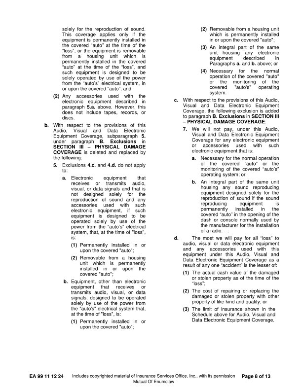
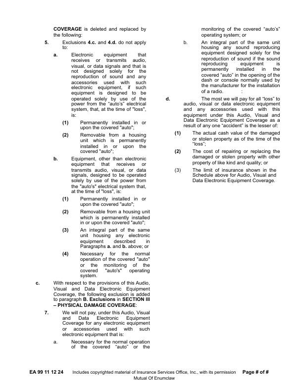
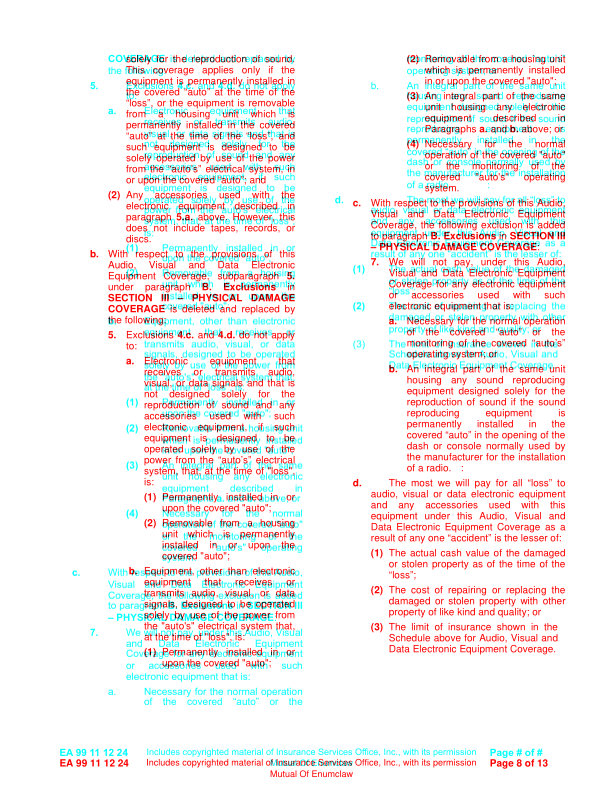
moved solely (+378.2, +48.0)pt moved for (+378.6, +48.0)pt moved the (+378.8, +48.0)pt moved reproduction (+215.2, +59.3)pt moved of (+214.7, +59.3)pt moved (2) (-280.8, +369.0)pt moved Removable (-262.8, +369.0)pt moved from (-262.8, +369.0)pt moved a (-262.7, +369.0)pt moved housing (-262.7, +369.0)pt moved unit (-262.7, +369.0)pt moved which (-262.8, +369.3)pt moved is (-262.7, +369.3)pt moved permanently (-262.7, +369.3)pt moved installed (-262.8, +369.3)pt moved in (-262.8, +368.8)pt moved or (-262.8, +368.8)pt moved upon (-262.8, +368.8)pt moved the (-262.8, +368.8)pt moved covered (-262.8, +368.8)pt moved "auto"; (-262.8, +368.8)pt moved (3) (-280.8, +368.8)pt moved An (-262.8, +368.8)pt moved integral (-262.7, +368.8)pt moved part (-262.8, +368.8)pt moved of (-262.8, +368.8)pt moved the (-262.7, +368.8)pt moved same (-262.8, +368.8)pt moved unit (-262.8, +369.1)pt moved housing (-262.8, +369.1)pt moved any (-262.7, +369.1)pt moved electronic (-262.8, +369.1)pt moved equipment (-262.8, +369.3)pt moved described (-262.8, +369.3)pt moved in (-262.8, +369.3)pt moved Paragraphs (-262.8, +368.8)pt moved a. (-262.7, +368.8)pt moved and (-262.8, +368.8)pt moved b. (-262.7, +368.8)pt moved above; (-262.8, +368.8)pt moved or (-262.8, +368.8)pt moved (4) (-280.8, +368.8)pt moved Necessary (-262.8, +368.8)pt moved for (-262.7, +368.8)pt moved the (-262.7, +368.8)pt moved normal (-262.8, +368.8)pt moved operation (-262.8, +369.1)pt moved of (-262.8, +369.1)pt moved the (-262.8, +369.1)pt moved covered (-262.8, +369.1)pt moved "auto" (-262.8, +369.1)pt moved or (-262.8, +369.3)pt moved the (-262.8, +369.3)pt moved monitoring (-262.7, +369.3)pt moved of (-262.8, +369.3)pt moved the (-262.7, +369.3)pt moved covered (-262.8, +369.6)pt moved "auto's" (-262.8, +369.6)pt moved operating (-262.8, +369.6)pt moved system. (-262.8, +369.1)pt moved c. (-280.8, +369.1)pt moved With (-262.8, +369.1)pt moved respect (-262.6, +369.1)pt moved to (-262.6, +369.1)pt moved the (-262.5, +369.1)pt moved provisions (-262.5, +369.1)pt moved of (-262.4, +369.1)pt moved this (-262.2, +369.1)pt moved Audio, (-262.8, +369.1)pt moved Visual (-262.8, +369.3)pt moved and (-262.9, +369.3)pt moved Data (-262.8, +369.3)pt moved Electronic (-262.8, +369.3)pt moved Equipment (-262.7, +369.3)pt moved Coverage, (-262.8, +369.6)pt moved the (-262.8, +369.6)pt moved following (-262.7, +369.6)pt moved exclusion (-262.7, +369.6)pt moved is (-262.7, +369.6)pt moved added (-262.7, +369.6)pt moved to (-262.8, +369.1)pt moved paragraph (-262.8, +369.1)pt moved B. (-262.8, +369.1)pt moved Exclusions (-262.8, +369.1)pt moved in (-262.8, +369.1)pt moved SECTION (-262.8, +369.1)pt moved III (-262.7, +369.1)pt moved – (-262.8, +369.3)pt moved PHYSICAL (-262.8, +369.3)pt moved DAMAGE (-263.0, +369.3)pt moved 7. (-280.8, +369.3)pt moved We (-262.8, +369.3)pt moved will (-267.6, +369.3)pt moved not (-272.4, +369.3)pt moved pay, (-277.1, +369.3)pt moved under (-282.6, +369.3)pt moved this (-287.3, +369.3)pt moved Audio, (-292.7, +369.3)pt moved Visual (-113.2, +358.3)pt moved and (-295.0, +369.6)pt moved Data (-284.2, +369.6)pt moved Electronic (-273.5, +369.6)pt moved Equipment (-262.7, +369.6)pt moved Coverage (-262.8, +369.1)pt moved for (-262.7, +369.1)pt moved any (-262.7, +369.1)pt moved electronic (-262.7, +369.1)pt moved equipment (-262.8, +369.1)pt moved or (-262.8, +369.3)pt moved accessories (-262.7, +369.3)pt moved used (-262.7, +369.3)pt moved with (-262.7, +369.3)pt moved such (-262.7, +369.3)pt moved electronic (-262.8, +369.6)pt moved equipment (-262.8, +369.6)pt moved that (-262.8, +369.6)pt moved is: (-262.8, +369.6)pt moved a. (-280.8, +369.6)pt moved Necessary (-262.8, +369.6)pt moved for (-262.8, +369.6)pt moved the (-262.8, +369.6)pt moved normal (-262.8, +369.6)pt moved operation (-262.8, +369.6)pt moved of (-262.8, +369.1)pt moved the (-262.8, +369.1)pt moved covered (-262.8, +369.1)pt moved “auto” (-262.7, +369.1)pt moved or (-262.8, +369.1)pt moved the (-262.7, +369.1)pt moved EA (-0.0, -12.0)pt moved 99 (-0.4, -12.0)pt moved 11 (-0.4, -12.0)pt moved 12 (-0.9, -12.0)pt moved 24 (-0.9, -12.0)pt moved Includes (+0.1, -11.1)pt moved copyrighted (+0.1, -11.1)pt moved material (+0.1, -11.1)pt moved of (+0.1, -11.1)pt moved Insurance (+0.1, -11.1)pt moved Services (+0.1, -11.1)pt moved Office, (+0.1, -11.1)pt moved Inc., (-0.0, -11.1)pt moved with (-0.0, -11.1)pt moved its (-0.0, -11.1)pt moved permission (-0.0, -11.1)pt moved Page (+0.0, -12.0)pt moved of (+0.1, -12.0)pt moved Mutual (-0.0, -10.6)pt moved Of (-0.0, -10.6)pt moved Enumclaw (-0.0, -10.6)pt size a. 10.0 -> 10.0pt
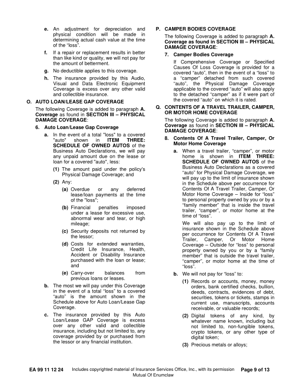
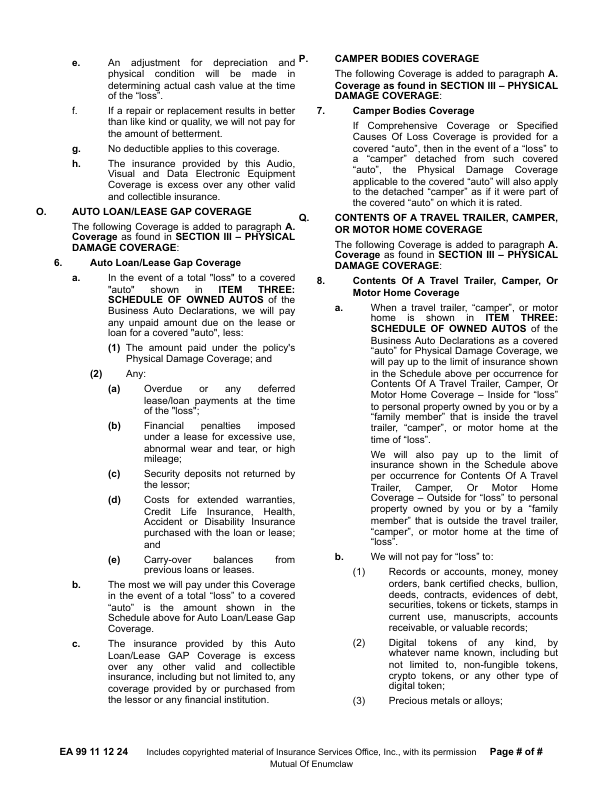
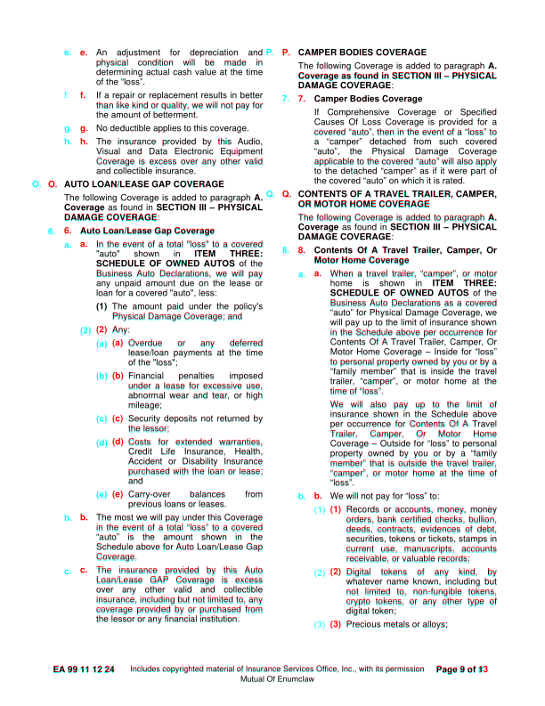
moved e. (-18.0, +3.8)pt moved An (+0.0, +3.8)pt moved adjustment (+0.0, +3.8)pt moved for (+0.1, +3.8)pt moved depreciation (+0.0, +3.8)pt moved and (+0.0, +3.8)pt moved physical (+0.0, +4.0)pt moved condition (+0.1, +4.0)pt moved will (+0.0, +4.0)pt moved be (+0.1, +4.0)pt moved made (+0.1, +4.0)pt moved in (+0.0, +4.0)pt moved determining (+0.0, +4.3)pt moved actual (+0.0, +4.3)pt moved cash (-0.0, +4.3)pt moved value (+0.0, +4.3)pt moved at (+0.1, +4.3)pt moved the (+0.0, +4.3)pt moved time (+0.0, +4.3)pt moved of (+0.0, +3.8)pt moved the (-0.0, +3.8)pt moved “loss”. (-0.0, +3.8)pt moved f. (-18.0, +3.8)pt moved If (+0.0, +3.8)pt moved a (+0.1, +3.8)pt moved repair (+0.0, +3.8)pt moved or (+0.1, +3.8)pt moved replacement (+0.1, +3.8)pt moved results (+0.1, +3.8)pt moved in (+0.0, +3.8)pt moved better (+0.0, +3.8)pt moved 7. (-18.0, -0.2)pt moved than (+0.0, +4.1)pt moved like (+0.2, +4.1)pt moved kind (+0.2, +4.1)pt moved or (+0.3, +4.1)pt moved quality, (+0.3, +4.1)pt moved we (-0.3, +4.1)pt moved will (-0.2, +4.1)pt moved not (-0.1, +4.1)pt moved pay (-0.0, +4.1)pt moved for (+0.0, +4.1)pt moved the (+0.0, +4.3)pt moved amount (-0.0, +4.3)pt moved of (-0.0, +4.3)pt moved betterment. (-0.0, +4.3)pt moved g. (-18.0, +4.3)pt moved No (+0.0, +4.3)pt moved deductible (-0.0, +4.3)pt moved applies (-0.0, +4.3)pt moved to (-0.0, +4.3)pt moved this (-0.0, +4.3)pt moved coverage. (-0.0, +4.3)pt moved h. (-18.0, +4.3)pt moved The (+0.0, +4.3)pt moved insurance (+0.2, +4.3)pt moved provided (+0.3, +4.3)pt moved by (+0.3, +4.3)pt moved this (+0.5, +4.3)pt moved Audio, (+0.0, +4.3)pt moved Visual (+0.0, +3.8)pt moved and (-0.1, +3.8)pt moved Data (-0.0, +3.8)pt moved Electronic (+0.0, +3.8)pt moved Equipment (+0.1, +3.8)pt moved AUTO (+0.0, +4.3)pt moved LOAN/LEASE (-0.2, +4.3)pt moved GAP (-0.2, +4.3)pt moved COVERAGE (-0.4, +4.3)pt moved The (+0.0, +4.3)pt moved following (+0.0, +4.3)pt moved Coverage (+0.0, +4.3)pt moved is (-0.0, +4.3)pt moved added (+0.0, +4.3)pt moved to (-0.0, +4.3)pt moved paragraph (+0.1, +4.3)pt moved A. (-0.0, +4.3)pt moved Coverage (+0.0, +3.8)pt moved as (+0.1, +3.8)pt moved found (+0.1, +3.8)pt moved in (+0.0, +3.8)pt moved SECTION (+0.0, +3.8)pt moved III (+0.1, +3.8)pt moved – (+0.1, +3.8)pt moved PHYSICAL (+0.0, +3.8)pt moved 6. (-18.0, +4.1)pt moved Auto (+0.0, +4.1)pt moved Loan/Lease (-0.0, +4.1)pt moved Gap (-0.0, +4.1)pt moved Coverage (-0.0, +4.1)pt moved a. (-18.0, +4.1)pt moved In (+0.0, +4.1)pt moved the (+0.0, +4.1)pt moved event (+0.1, +4.1)pt moved of (+0.0, +4.1)pt moved a (+0.1, +4.1)pt moved total (+0.0, +4.1)pt moved "loss" (+0.0, +4.1)pt moved to (+0.0, +4.1)pt moved a (+0.1, +4.1)pt moved covered (+0.0, +4.1)pt moved 8. (-18.0, +0.1)pt moved "auto" (+0.0, +4.3)pt moved shown (+0.1, +4.3)pt moved in (+0.1, +4.3)pt moved ITEM (+0.1, +4.3)pt moved THREE: (+0.1, +4.3)pt moved SCHEDULE (+0.0, +3.8)pt moved OF (+0.2, +3.8)pt moved OWNED (+0.3, +3.8)pt moved AUTOS (+0.0, +3.8)pt moved of (-0.1, +3.8)pt moved the (+0.1, +3.8)pt moved a. (-18.0, +0.3)pt moved any (+0.0, +4.3)pt moved unpaid (+0.1, +4.3)pt moved amount (+0.0, +4.3)pt moved due (+0.0, +4.3)pt moved on (+0.0, +4.3)pt moved the (+0.0, +4.3)pt moved lease (+0.1, +4.3)pt moved or (-0.0, +4.3)pt moved loan (+0.0, +3.8)pt moved for (-0.0, +3.8)pt moved a (-0.0, +3.8)pt moved covered (-0.0, +3.8)pt moved "auto", (-0.0, +3.8)pt moved less: (-0.0, +3.8)pt moved (1) (+0.0, +3.8)pt moved The (+0.0, +3.8)pt moved amount (+0.0, +3.8)pt moved paid (+0.1, +3.8)pt moved under (+0.1, +3.8)pt moved the (+0.0, +3.8)pt moved policy's (+0.0, +3.8)pt moved Physical (+0.0, +4.1)pt moved Damage (-0.0, +4.1)pt moved Coverage; (-0.0, +4.1)pt moved and (-0.0, +4.1)pt moved (2) (-18.0, +4.1)pt moved Any: (+0.0, +4.1)pt moved of (+0.0, +3.8)pt moved the (-0.0, +3.8)pt moved "loss"; (-0.0, +3.8)pt moved (b) (-18.0, +3.8)pt moved Financial (+0.0, +3.8)pt moved penalties (+0.1, +3.8)pt moved imposed (+0.0, +3.8)pt moved under (+0.0, +4.1)pt moved a (+0.0, +4.1)pt moved lease (+0.0, +4.1)pt moved for (+0.1, +4.1)pt moved excessive (+0.1, +4.1)pt moved use, (+0.1, +4.1)pt moved abnormal (+0.0, +4.3)pt moved wear (+0.2, +4.3)pt moved and (+0.2, +4.3)pt moved tear, (+0.4, +4.3)pt moved or (-0.1, +4.3)pt moved high (+0.1, +4.3)pt moved mileage; (+0.0, +3.8)pt moved (c) (-18.0, +3.8)pt moved Security (+0.0, +3.8)pt moved deposits (+0.1, +3.8)pt moved not (+0.0, +3.8)pt moved returned (+0.1, +3.8)pt moved by (+0.0, +3.8)pt moved the (+0.0, +4.1)pt moved lessor; (-0.0, +4.1)pt moved or (-66.9, -7.2)pt moved and (+0.0, +4.3)pt moved b. (-18.0, +0.1)pt moved previous (+0.0, +3.8)pt moved loans (-0.0, +3.8)pt moved or (-0.0, +3.8)pt moved leases. (-0.0, +3.8)pt moved (1) (-18.0, +0.1)pt moved b. (-18.0, +3.8)pt moved The (+0.0, +3.8)pt moved most (+0.0, +3.8)pt moved we (+0.0, +3.8)pt moved will (+0.1, +3.8)pt moved pay (+0.1, +3.8)pt moved under (+0.0, +3.8)pt moved this (+0.1, +3.8)pt moved Coverage (+0.0, +3.8)pt moved in (+0.0, +4.1)pt moved the (+0.1, +4.1)pt moved event (+0.0, +4.1)pt moved of (+0.1, +4.1)pt moved a (+0.0, +4.1)pt moved total (+0.0, +4.1)pt moved “loss” (+0.0, +4.1)pt moved to (+0.1, +4.1)pt moved a (+0.0, +4.1)pt moved covered (+0.0, +4.1)pt moved “auto” (+0.0, +4.3)pt moved is (+0.1, +4.3)pt moved the (+0.0, +4.3)pt moved amount (+0.0, +4.3)pt moved shown (+0.0, +4.3)pt moved in (+0.1, +4.3)pt moved the (+0.1, +4.3)pt moved Schedule (+0.0, +3.8)pt moved above (+0.2, +3.8)pt moved for (+0.3, +3.8)pt moved Auto (-0.2, +3.8)pt moved Loan/Lease (-0.1, +3.8)pt moved Gap (+0.1, +3.8)pt moved c. (-18.0, +4.1)pt moved The (+0.0, +4.1)pt moved insurance (+0.2, +4.1)pt moved provided (+0.2, +4.1)pt moved by (+0.4, +4.1)pt moved this (+0.5, +4.1)pt moved Auto (+0.0, +4.1)pt moved Loan/Lease (+0.0, +4.3)pt moved GAP (+0.1, +4.3)pt moved Coverage (-0.0, +4.3)pt moved is (-0.0, +4.3)pt moved excess (+0.1, +4.3)pt moved over (+0.0, +4.6)pt moved any (+0.1, +4.6)pt moved other (+0.0, +4.6)pt moved valid (+0.1, +4.6)pt moved and (+0.1, +4.6)pt moved collectible (+0.1, +4.6)pt moved tokens, (-103.9, +11.6)pt moved insurance, (+0.0, +4.1)pt moved including (+0.1, +4.1)pt moved but (+0.1, +4.1)pt moved not (+0.0, +4.1)pt moved limited (+0.1, +4.1)pt moved to, (+0.0, +4.1)pt moved any (+0.1, +4.1)pt moved coverage (+0.0, +4.3)pt moved provided (+0.0, +4.3)pt moved by (+0.0, +4.3)pt moved or (+0.1, +4.3)pt moved purchased (+0.1, +4.3)pt moved from (+0.0, +4.3)pt moved the (+0.0, +4.6)pt moved lessor (-0.0, +4.6)pt moved or (-0.0, +4.6)pt moved any (-0.0, +4.6)pt moved financial (-0.0, +4.6)pt moved institution. (-0.0, +4.6)pt moved (3) (-18.0, +0.1)pt size f. 10.0 -> 10.0pt size (1) 10.0 -> 10.0pt size (3) 10.0 -> 10.0pt
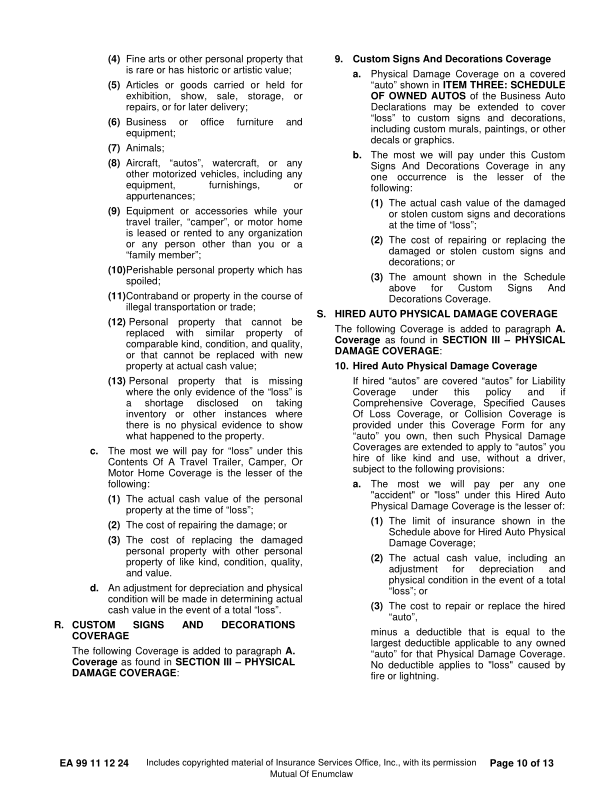
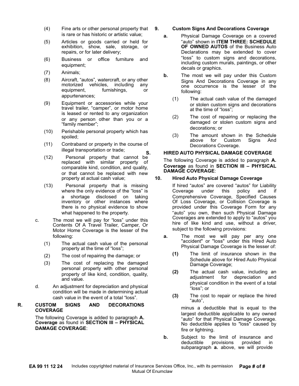
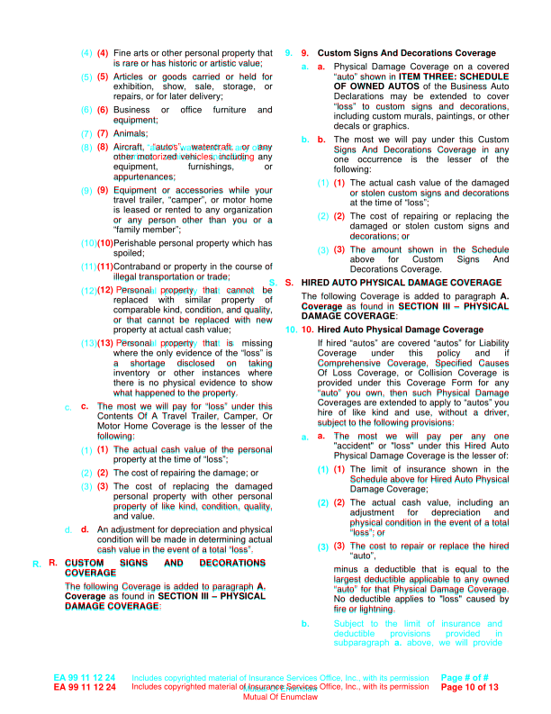
moved (4) (-18.0, +0.0)pt moved 9. (-18.0, +0.0)pt moved a. (-18.0, +0.0)pt moved (5) (-18.0, +0.3)pt moved (6) (-18.0, +0.1)pt moved (7) (-18.0, +0.3)pt moved b. (-18.0, +0.1)pt moved (8) (-18.0, +0.3)pt moved “autos”, (-6.4, +0.3)pt moved watercraft, (-12.7, +0.3)pt moved or (-19.2, +0.3)pt moved any (-25.5, +0.3)pt moved motorized (-26.6, -0.2)pt moved vehicles, (-17.7, -0.2)pt moved including (-8.9, -0.2)pt moved (1) (-18.0, +0.1)pt moved (9) (-18.0, +0.3)pt moved (2) (-18.0, -0.2)pt moved (3) (-18.0, +0.3)pt moved (12) (-18.0, +0.3)pt moved Personal (+5.8, +0.3)pt moved property (+4.4, +0.3)pt moved that (+2.9, +0.3)pt moved 10. (-18.0, -0.2)pt moved (13) (-18.0, -0.2)pt moved Personal (+5.8, -0.2)pt moved property (+4.4, -0.2)pt moved that (+2.9, -0.2)pt moved c. (-18.0, +0.3)pt moved a. (-18.0, +0.3)pt moved (1) (-18.0, +0.3)pt moved (1) (-18.0, +0.1)pt moved (2) (-18.0, -0.2)pt moved (3) (-18.0, -0.2)pt moved (2) (-18.0, -0.2)pt moved d. (-18.0, -0.2)pt moved (3) (-18.0, +0.6)pt moved R. (-18.0, +0.3)pt moved EA (-0.0, -12.0)pt moved 99 (-0.4, -12.0)pt moved 11 (-0.4, -12.0)pt moved 12 (-0.9, -12.0)pt moved 24 (-0.9, -12.0)pt moved Includes (+0.1, -11.1)pt moved copyrighted (+0.1, -11.1)pt moved material (+0.1, -11.1)pt moved of (+0.1, -11.1)pt moved Insurance (+0.1, -11.1)pt moved Services (+0.1, -11.1)pt moved Office, (+0.1, -11.1)pt moved Inc., (-0.0, -11.1)pt moved with (-0.0, -11.1)pt moved its (-0.0, -11.1)pt moved permission (-0.0, -11.1)pt moved Page (+0.0, -12.0)pt moved of (-5.5, -12.0)pt moved Mutual (-0.0, -10.6)pt moved Of (-0.0, -10.6)pt moved Enumclaw (-0.0, -10.6)pt size (4) 10.0 -> 10.0pt size (5) 10.0 -> 10.0pt size (6) 10.0 -> 10.0pt size (7) 10.0 -> 10.0pt size (8) 10.0 -> 10.0pt size (1) 10.0 -> 10.0pt size (9) 10.0 -> 10.0pt size (2) 10.0 -> 10.0pt size (3) 10.0 -> 10.0pt size (12) 10.0 -> 10.0pt size (13) 10.0 -> 10.0pt size c. 10.0 -> 10.0pt size (1) 10.0 -> 10.0pt size (2) 10.0 -> 10.0pt size (3) 10.0 -> 10.0pt size d. 10.0 -> 10.0pt
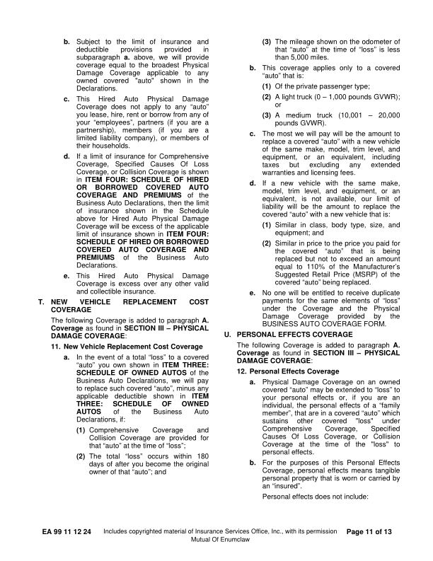
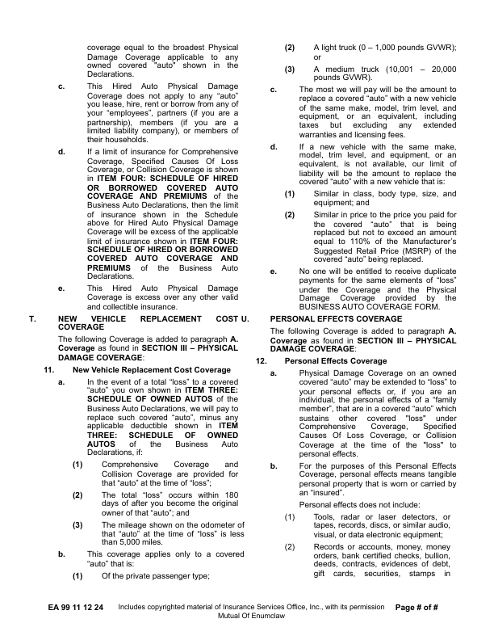
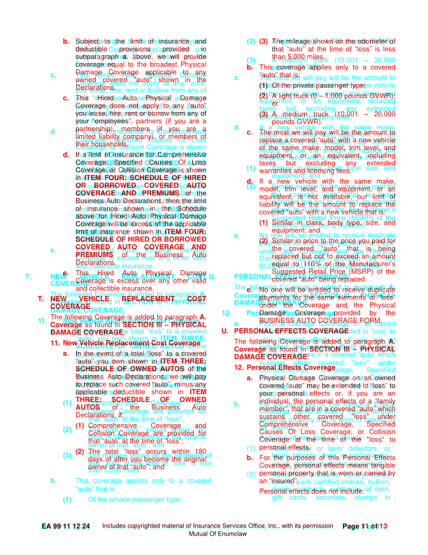
moved coverage (+0.0, -32.9)pt moved equal (+0.1, -32.9)pt moved to (+0.1, -32.9)pt moved the (+0.1, -32.9)pt moved broadest (+0.0, -32.9)pt moved Physical (+0.1, -32.9)pt moved (2) (-18.0, -77.9)pt moved A (+0.0, -77.9)pt moved light (+0.0, -77.9)pt moved truck (+0.1, -77.9)pt moved (0 (+0.1, -77.9)pt moved – (+0.1, -77.9)pt moved 1,000 (+0.1, -77.9)pt moved pounds (+0.1, -77.9)pt moved GVWR); (+0.1, -77.9)pt moved Damage (-149.4, -69.7)pt moved Coverage (+46.9, -80.7)pt moved to (+28.3, -80.7)pt moved any (+31.8, -80.7)pt moved or (+189.5, -91.7)pt moved (3) (-18.0, -77.7)pt moved A (+0.0, -77.7)pt moved medium (-0.4, -77.7)pt moved truck (-0.3, -77.7)pt moved (10,001 (-0.2, -77.7)pt moved – (-0.1, -77.7)pt moved 20,000 (+0.0, -77.7)pt moved pounds (+0.0, -78.2)pt moved GVWR). (+0.0, -78.2)pt moved c. (-18.0, -78.2)pt moved The (+0.0, -78.2)pt moved most (+0.0, -78.2)pt moved we (+0.0, -78.2)pt moved will (+0.1, -78.2)pt moved pay (+0.1, -78.2)pt moved will (+0.1, -78.2)pt moved be (+0.1, -78.2)pt moved the (+0.0, -78.2)pt moved amount (+0.0, -78.2)pt moved to (+0.1, -78.2)pt moved replace (+0.0, -77.9)pt moved a (+0.0, -77.9)pt moved covered (+0.1, -77.9)pt moved “auto” (+0.1, -77.9)pt moved with (+0.0, -77.9)pt moved a (+0.0, -77.9)pt moved new (+0.0, -77.9)pt moved vehicle (+0.1, -77.9)pt moved of (+0.0, -77.7)pt moved the (+0.0, -77.7)pt moved same (+0.1, -77.7)pt moved make, (+0.1, -77.7)pt moved model, (+0.1, -77.7)pt moved trim (+0.1, -77.7)pt moved level, (+0.0, -77.7)pt moved and (+0.0, -77.7)pt moved a (+171.9, -80.9)pt moved equipment, (+0.0, -78.2)pt moved or (+0.0, -78.2)pt moved an (+0.1, -78.2)pt moved equivalent, (+0.0, -78.2)pt moved including (+0.0, -78.2)pt moved taxes (+0.0, -77.9)pt moved but (+0.0, -77.9)pt moved excluding (+0.1, -77.9)pt moved any (+0.1, -77.9)pt moved extended (+0.1, -77.9)pt moved or (+70.1, -81.2)pt moved warranties (+0.0, -77.7)pt moved and (-0.0, -77.7)pt moved licensing (-0.0, -77.7)pt moved fees. (-0.0, -77.7)pt moved d. (-18.0, -77.7)pt moved If (+0.0, -77.7)pt moved a (+0.0, -77.7)pt moved new (+0.0, -77.7)pt moved vehicle (+0.0, -77.7)pt moved with (+0.1, -77.7)pt moved the (+0.0, -77.7)pt moved same (+0.1, -77.7)pt moved make, (+0.1, -77.7)pt moved model, (+0.0, -78.2)pt moved trim (+0.0, -78.2)pt moved level, (+0.0, -78.2)pt moved and (+0.1, -78.2)pt moved equipment, (+0.1, -78.2)pt moved or (+0.1, -78.2)pt moved an (+0.1, -78.2)pt moved equivalent, (+0.0, -77.9)pt moved is (+0.0, -77.9)pt moved not (+0.0, -77.9)pt moved available, (+0.1, -77.9)pt moved our (+0.0, -77.9)pt moved limit (+0.0, -77.9)pt moved of (+0.1, -77.9)pt moved liability (+0.0, -77.7)pt moved will (+0.1, -77.7)pt moved be (+0.1, -77.7)pt moved the (+0.0, -77.7)pt moved amount (+0.1, -77.7)pt moved to (+0.1, -77.7)pt moved replace (+0.1, -77.7)pt moved the (+0.1, -77.7)pt moved in (-106.5, -76.9)pt moved covered (+0.0, -78.2)pt moved “auto” (-0.0, -78.2)pt moved with (-0.0, -78.2)pt moved a (-0.0, -78.2)pt moved new (-0.0, -78.2)pt moved vehicle (-0.0, -78.2)pt moved that (-0.0, -78.2)pt moved is: (-0.0, -78.2)pt moved (1) (-18.0, -78.2)pt moved Similar (+0.0, -78.2)pt moved in (+0.0, -78.2)pt moved class, (+0.1, -78.2)pt moved body (+0.1, -78.2)pt moved type, (+0.0, -78.2)pt moved size, (+0.1, -78.2)pt moved and (+0.0, -78.2)pt moved of (+43.7, -77.2)pt moved the (+48.5, -77.2)pt moved limit (+169.4, -76.9)pt moved of (-22.0, -65.7)pt moved insurance (-17.6, -65.7)pt moved shown (-13.2, -65.7)pt moved in (-8.8, -65.7)pt moved (2) (-18.0, -77.9)pt moved Similar (+0.0, -77.9)pt moved in (+0.0, -77.9)pt moved price (+0.1, -77.9)pt moved to (+0.1, -77.9)pt moved the (+0.1, -77.9)pt moved price (+0.1, -77.9)pt moved you (+0.1, -77.9)pt moved paid (+0.1, -77.9)pt moved for (+0.0, -77.9)pt moved the (+0.0, -77.7)pt moved covered (+0.1, -77.7)pt moved “auto” (+0.1, -77.7)pt moved that (+0.0, -77.7)pt moved is (+0.1, -77.7)pt moved being (+0.0, -77.7)pt moved of (+46.8, -76.9)pt moved the (+37.8, -76.9)pt moved replaced (+0.0, -78.2)pt moved but (+0.0, -78.2)pt moved not (+0.1, -78.2)pt moved to (+0.1, -78.2)pt moved exceed (+0.1, -78.2)pt moved an (+0.1, -78.2)pt moved amount (+0.0, -78.2)pt moved equal (+0.0, -77.9)pt moved to (+0.2, -77.9)pt moved 110% (+0.3, -77.9)pt moved of (-0.4, -77.9)pt moved the (-0.2, -77.9)pt moved Manufacturer’s (-0.1, -77.9)pt moved Suggested (+0.0, -77.7)pt moved Retail (+0.1, -77.7)pt moved Price (+0.1, -77.7)pt moved (MSRP) (+0.0, -77.7)pt moved of (+0.0, -77.7)pt moved the (+0.1, -77.7)pt moved covered (+0.0, -78.2)pt moved “auto” (-0.0, -78.2)pt moved being (-0.0, -78.2)pt moved replaced. (-0.0, -78.2)pt moved e. (-18.0, -78.2)pt moved No (+0.0, -78.2)pt moved one (+0.1, -78.2)pt moved will (+0.1, -78.2)pt moved be (+0.1, -78.2)pt moved entitled (+0.0, -78.2)pt moved to (+0.1, -78.2)pt moved receive (+0.0, -78.2)pt moved duplicate (+0.1, -78.2)pt moved payments (+0.0, -77.9)pt moved for (+0.0, -77.9)pt moved the (+0.0, -77.9)pt moved same (+0.0, -77.9)pt moved elements (+0.0, -77.9)pt moved of (+0.1, -77.9)pt moved “loss” (+0.1, -77.9)pt moved under (+0.0, -77.7)pt moved the (+0.1, -77.7)pt moved Coverage (+0.1, -77.7)pt moved and (+0.1, -77.7)pt moved the (+0.1, -77.7)pt moved Physical (+0.1, -77.7)pt moved Damage (+0.0, -78.2)pt moved Coverage (+0.1, -78.2)pt moved provided (+0.0, -78.2)pt moved by (+0.0, -78.2)pt moved the (+0.1, -78.2)pt moved The (+262.8, -42.9)pt moved following (+263.9, -42.9)pt moved Coverage (+265.0, -42.9)pt moved is (+266.0, -42.9)pt moved added (+267.1, -42.9)pt moved to (+268.1, -42.9)pt moved paragraph (+269.3, -42.9)pt moved A. (+270.3, -42.9)pt moved The (-262.8, -68.2)pt moved following (-263.8, -68.2)pt moved Coverage (-264.9, -68.2)pt moved is (-266.0, -68.2)pt moved added (-267.1, -68.2)pt moved to (-268.1, -68.2)pt moved paragraph (-269.2, -68.2)pt moved A. (-270.3, -68.2)pt moved Coverage (+0.0, -77.7)pt moved as (+0.1, -77.7)pt moved found (+0.0, -77.7)pt moved in (+0.0, -77.7)pt moved SECTION (+0.0, -77.7)pt moved III (+0.1, -77.7)pt moved – (+0.1, -77.7)pt moved PHYSICAL (+0.0, -77.7)pt moved a. (-18.0, -32.7)pt moved In (+0.0, -32.7)pt moved the (+0.1, -32.7)pt moved event (+0.0, -32.7)pt moved of (+0.1, -32.7)pt moved a (+0.1, -32.7)pt moved total (+0.1, -32.7)pt moved “loss” (+0.0, -32.7)pt moved to (+0.0, -32.7)pt moved a (+0.0, -32.7)pt moved covered (+0.0, -32.7)pt moved covered (+0.0, -77.9)pt moved “auto” (+0.0, -77.9)pt moved may (+0.0, -77.9)pt moved be (+0.1, -77.9)pt moved extended (+0.0, -77.9)pt moved to (+0.0, -77.9)pt moved “loss” (+0.1, -77.9)pt moved to (+0.1, -77.9)pt moved shown (-33.6, -77.2)pt moved in (-37.8, -77.2)pt moved ITEM (-42.0, -77.2)pt moved your (+0.0, -77.7)pt moved personal (+0.2, -77.7)pt moved effects (+0.2, -77.7)pt moved or, (+0.2, -77.7)pt moved if (-0.2, -77.7)pt moved you (-0.1, -77.7)pt moved are (-0.1, -77.7)pt moved an (+0.1, -77.7)pt moved SCHEDULE (-51.4, -76.9)pt moved OF (-61.0, -76.9)pt moved OWNED (-70.6, -76.9)pt moved individual, (+0.0, -78.2)pt moved the (+0.1, -78.2)pt moved personal (+0.1, -78.2)pt moved effects (+0.1, -78.2)pt moved of (-0.0, -78.2)pt moved a (-0.0, -78.2)pt moved “family (+0.1, -78.2)pt moved Business (-108.8, -76.7)pt moved Auto (-123.7, -76.7)pt moved member”, (+0.0, -77.9)pt moved that (+0.1, -77.9)pt moved are (+0.0, -77.9)pt moved in (+0.1, -77.9)pt moved a (+0.0, -77.9)pt moved covered (+0.1, -77.9)pt moved “auto” (+0.0, -77.9)pt moved which (+0.0, -77.9)pt moved sustains (+0.0, -77.7)pt moved other (+0.1, -77.7)pt moved covered (+0.1, -77.7)pt moved "loss" (+0.0, -77.7)pt moved under (+0.0, -77.7)pt moved Comprehensive (+0.0, -78.2)pt moved Coverage, (+0.0, -78.2)pt moved Specified (+0.1, -78.2)pt moved Causes (+0.0, -77.9)pt moved Of (+0.1, -77.9)pt moved Loss (+0.1, -77.9)pt moved Coverage, (+0.1, -77.9)pt moved or (+0.1, -77.9)pt moved Collision (+0.0, -77.9)pt moved Coverage (+0.0, -77.7)pt moved at (+0.1, -77.7)pt moved the (+0.0, -77.7)pt moved time (+0.1, -77.7)pt moved of (+0.1, -77.7)pt moved the (+0.0, -77.7)pt moved "loss" (+0.1, -77.7)pt moved to (+0.1, -77.7)pt moved personal (+0.0, -77.4)pt moved effects. (+0.0, -77.4)pt moved b. (-18.0, -77.4)pt moved For (+0.0, -77.4)pt moved the (+0.1, -77.4)pt moved purposes (+0.1, -77.4)pt moved of (+0.1, -77.4)pt moved this (+0.2, -77.4)pt moved Personal (+0.2, -77.4)pt moved Effects (+0.2, -77.4)pt moved Coverage, (+0.0, -77.9)pt moved personal (+0.1, -77.9)pt moved effects (+0.1, -77.9)pt moved means (-0.0, -77.9)pt moved tangible (+0.1, -77.9)pt moved personal (+0.0, -77.7)pt moved property (+0.1, -77.7)pt moved that (+0.0, -77.7)pt moved is (+0.0, -77.7)pt moved worn (+0.1, -77.7)pt moved or (+0.0, -77.7)pt moved carried (+0.0, -77.7)pt moved by (+0.0, -77.7)pt moved an (+0.0, -77.4)pt moved “insured”. (+0.0, -77.4)pt moved Personal (+0.0, -77.4)pt moved effects (+0.0, -77.4)pt moved does (-0.2, -77.4)pt moved not (-0.2, -77.4)pt moved include: (-0.2, -77.4)pt moved of (-5.5, -0.5)pt
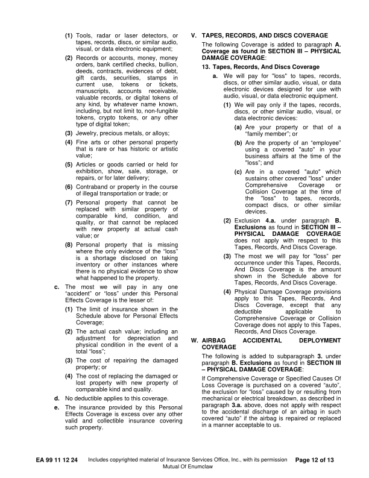
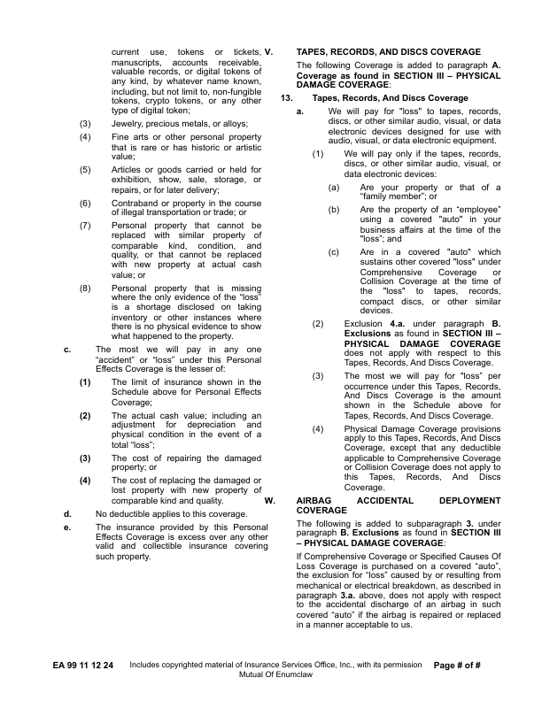
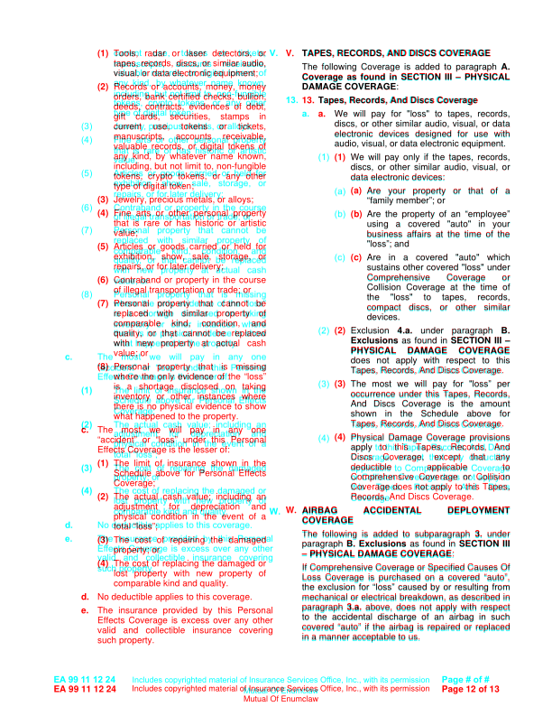
moved or (+52.2, +0.0)pt moved or (+51.4, -0.2)pt moved 13. (-18.0, -0.2)pt moved of (-111.8, +7.1)pt moved a. (-18.0, -0.2)pt moved or (-2.4, +0.1)pt moved or (-26.7, +4.3)pt moved (1) (-18.0, -0.2)pt moved or (-71.7, -3.2)pt moved (a) (-18.0, +0.3)pt moved or (-72.0, -85.2)pt moved (6) (-18.0, -80.7)pt moved Contraband (+0.0, -80.7)pt moved or (+0.1, -80.7)pt moved property (+0.0, -80.7)pt moved in (+0.0, -80.7)pt moved the (+0.0, -80.7)pt moved course (+0.1, -80.7)pt moved (2) (-18.0, -0.2)pt moved Personal (+129.7, +0.3)pt moved the (+40.3, -0.2)pt moved (3) (-18.0, +0.1)pt moved (1) (-18.0, -81.2)pt moved The (+0.0, -81.2)pt moved limit (+0.0, -81.2)pt moved of (+0.0, -81.2)pt moved insurance (+0.1, -81.2)pt moved shown (+0.1, -81.2)pt moved in (+0.1, -81.2)pt moved the (+0.1, -81.2)pt moved Schedule (+0.0, -80.9)pt moved above (+0.1, -80.9)pt moved for (+0.1, -80.9)pt moved Personal (+0.2, -80.9)pt moved Effects (+0.2, -80.9)pt moved Coverage (-18.6, -81.2)pt moved Coverage; (+0.0, -80.7)pt moved (2) (-18.0, -80.7)pt moved The (+0.0, -80.7)pt moved actual (+0.0, -80.7)pt moved cash (+0.1, -80.7)pt moved value; (+0.1, -80.7)pt moved including (+0.0, -80.7)pt moved an (+0.1, -80.7)pt moved Records, (+32.2, -80.7)pt moved And (+31.7, -80.7)pt moved Discs (+31.7, -80.7)pt moved Coverage. (+31.7, -80.7)pt moved adjustment (+0.0, -81.2)pt moved for (+0.1, -81.2)pt moved depreciation (+0.0, -81.2)pt moved and (+0.0, -81.2)pt moved physical (+0.0, -80.9)pt moved condition (+0.0, -80.9)pt moved in (+0.0, -80.9)pt moved the (+0.0, -80.9)pt moved event (+0.0, -80.9)pt moved of (+0.1, -80.9)pt moved a (+0.0, -80.9)pt moved total (+0.0, -80.7)pt moved “loss”; (-0.0, -80.7)pt moved The (-18.0, -2.7)pt moved EA (-0.0, -12.0)pt moved 99 (-0.4, -12.0)pt moved 11 (-0.4, -12.0)pt moved 12 (-0.9, -12.0)pt moved 24 (-0.9, -12.0)pt moved Includes (+0.1, -11.1)pt moved copyrighted (+0.1, -11.1)pt moved material (+0.1, -11.1)pt moved of (+0.1, -11.1)pt moved Insurance (+0.1, -11.1)pt moved Services (+0.1, -11.1)pt moved Office, (+0.1, -11.1)pt moved Inc., (-0.0, -11.1)pt moved with (-0.0, -11.1)pt moved its (-0.0, -11.1)pt moved permission (-0.0, -11.1)pt moved Page (+0.0, -12.0)pt moved of (-5.5, -12.0)pt moved Mutual (-0.0, -10.6)pt moved Of (-0.0, -10.6)pt moved Enumclaw (-0.0, -10.6)pt size (1) 10.0 -> 10.0pt size (a) 10.0 -> 10.0pt size (6) 10.0 -> 10.0pt size (2) 10.0 -> 10.0pt size (3) 10.0 -> 10.0pt
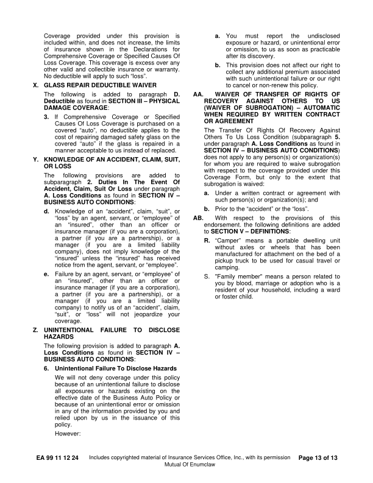
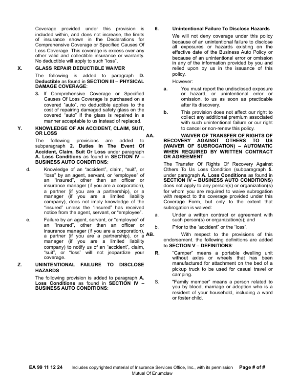
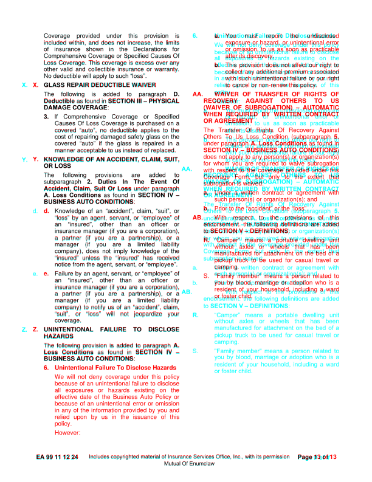
moved to (+81.0, +4.3)pt moved b. (-18.0, +122.3)pt moved This (+0.0, +122.3)pt moved provision (+0.0, +122.3)pt moved does (+0.1, +122.3)pt moved not (+0.1, +122.3)pt moved affect (+0.2, +122.3)pt moved our (-0.0, +122.3)pt moved right (+0.1, +122.3)pt moved to (+0.1, +122.3)pt moved or (+28.2, -6.9)pt moved to (-92.0, -6.7)pt moved d. (-18.0, +0.1)pt moved to (+68.9, +0.1)pt moved the (-17.4, -3.9)pt moved e. (-18.0, -0.2)pt moved or (-11.6, -0.2)pt moved of (+134.2, +3.8)pt moved of (+261.7, -32.7)pt moved or (+191.5, -32.4)pt moved of (-5.5, -0.5)pt size d. 10.0 -> 10.0pt size e. 10.0 -> 10.0pt